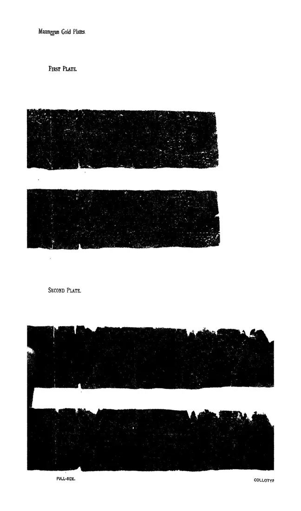

Piṭhāpuram plates of Vira-Chōḍa, dated in his twenty-third year
No. 10.—PITHAPURAM PLATES OF VIRA-CHODA,
DATED IN HIS TWENTY-THIRD YEAR. By H. KRISHNA SASTRI, B.A.The copper plates which bear this inscription were forwarded to Dr. Hultzsch by the Government of Madras. They were sent by the Raja of Pithápuram to Mr. D. F. Carmichael when he was Chief Secretary, i.e. between the years 1875 and 1878. Mr. Carmichael had lent the plates for examination to Dr. Burnell, who figured the second side of the third plate in his South-Indian Palceography, second edition, Plate xxix.1
The plates are nine in number. Each of them bears writing on both sides, except the first and last which are engraved only on their inner sides. They are not of uniform size; but each measures, on the average, 10" by 5. To the proper right of each plate is a hole, in diameter.2 Through these holes is passed a massive ring which is now cut. It is thick and in diameter. Its ends are secured in a circular seal which measures 3 in diameter. As may be seen in the collotype No. 2 on the Plate facing p. 104 of Vol. III. above, the seal rests on an expanded lotus flower and bears, in relief on a counter-sunk surface, the legend śrē-Tribhuvan[áñ]kuśa in Telugu letters. Above the legend it bears a boar which faces the proper left and has an elephant-goad overhead. In front of the boar are a chaurē, a conch, and the moon; and behind it, another chaurē, a svastika, and the sun. Below the legend there is a drum (?), an expanded lotus flower, and apparently a wooden stand for supporting the alhishēka dish.
As observed by Dr. Burnell, the inscription is written in the transitional Telugu alphabet.3 This is shown e.g. by the two forms, one the earlier and the other later, in which the mē of Dakshipāmūrti in ll. 162 and 163 appears. The final m is used in two cases, viz. in ll. 45 and 63; but in all other cases the anusvāra takes the place of final m. The only groups in which the nasal is not represented by anusvāra are nṭa, nṭa, nta and nda. The difference in the secondary forms of a and ā, i and ī, u and ū, o, ō and au is not kept up throughout. In three cases the long ū is marked by ā and u, viz. in the ū of mūṇdunu in l. 215 and the ū of dērppuna in ll. 262 and 263. The ō of pyē of bhūmēr=apy=ēkao in l. 278 is added to the secondary y. The writing is protected by raised rims and is consequently in a state of perfect preservation, except certain letters written over erasures. The language of the inscription is Sanskrit poetry (verses 1-35) and Sanskrit prose (ll. 2-17; 18-31; 68-71; 80-186; 271-277; and 279 to 280). The description of the boundaries (ll. 187-271) is in a mixture of Telugu and Sanskrit prose. As regards orthographical peculiarities, it may be noted that a consonant, besides being, as usual, doubled after the secondary form of r, is frequently doubled after an anusvāra, as in ll. 2, 21, 23, 28 etc.; that ri is used for ri in krita for krita (ll. 2 and 20) and Hrishēka for Hrishēka (l. 115); and that in conjunct consonants the secondary r is not only omitted in several cases, but is mistakenly represented by ē in sāddhē for sārdha (l. 12), by i in niggitya for nirgatya (l. 15), and by ā in Vishnuvadilhānō for Vishnuvardhanō (l. 22). Stnāna for snāna (l. 20) and sārtvam̄ for sārtham̄ (l. 61) are due to the vernacular pronunciation of Sanskrit words. The symbol for r is used in the following cases:—(1) in proper names,—Chiriyāṇḍn, Erasēvaka, Eriyapōta, Kadalusirukāla, Perumburakhaḍal and
1 See Dr. Burnell's prefatory note, p. v. paragraph 3.
2 On the margins of the ring-holes of plates III. a, IV. a and IV. b, and V. a, respectively, the Telugu numerals 3, 4 and 5 are scribbled. The last figure is not so clear as the first two.
3 See note 1 above.
Tîrukuruâguđi; (2) in the endings of Telugu names of towns,— kurru, parru and torra; (3) in the Telugu words,— cheruvu (a tank), éru (a stream), karru (a bank), korađu (the stump of a tree), kriđarasulka (?), munnîru (the sea), pûru (to flow), podaru (a bush) and râyi [(a stone); and (4) in the Telugu names of trees or plants,— avuru, rêla, rellu, and veđaturu.
The only copper-plate inscription of Vira-Chôđa, which has been published before, are the Chellûr plates of his 21st year.1 Like these plates and other inscriptions of the later Eastern Châlukyas, the subjoined inscription opens with a mythical genealogy of the Châlukya family (ll. 1-18) and a historical account of the Eastern Châlukya kings (l. 19 f.). This part of the inscription contains nothing new to us, but agrees in every detail with the account given in the Chellûr plates.2 The reign of Vira-Chôđa is described in verses 18-26. Of these verses, 18-21 correspond to verses 18-21 of the Chellûr plates. Verse 20 gives the correct reading of the town where Vira-Chôđa was crowned, viz. Jananáthanagari,3 which is perhaps a poetical form of Râjamahèndrapura, the modern Râjamahèndri. In verse 21 the Šaka date of Vira-Chôđa's accession is expressed by the numerical words šaśi-kh-âmbar-èndu. This various reading shows that Dr. Hultzsch was right in understanding the word khadvaya in šaśi-khadvay-èndu, as the corresponding verse of the Chellûr plates reads, to represent 'two cyphers,' and not a 'cypher' and a 'two,' which would be another possible explanation.4 Verse 22 states that Vira-Chôđa bore the title Samastabhuvanâšraya.5 Verses 25 and 26 state that his father, the emperor, viz. Kulôttunga-Chôła I., recalled him, but sent him back "for the conquest of the north" in the fifth year, apparently of Vira-Chôđa's reign. The recall of Vira-Chôđa and his temporary stay with his father may be considered either as a punishment for misbehaviour and rebellion, or he may have been recalled to help his father against a foreign enemy, perhaps against the Pândya king who, according to the Pithâpuram pillar inscription of Prithvîšvara, was defeated by Veđura II., a vassal of Vira-Chôđa.6 On the same occasion the Pândyas may have adopted the title Râjiga-Chôła-manôbhaṅga, 'one who frustrated the wishes of Râjiga-Chôła,' i.e. of Kulôttunga I.7 Vira-Chôđa's subsequent return to Vêngî may have been due to political troubles in his province, his absence from which may have contributed to the rise of feudatory families like the Velanându and Kôna chiefs, who, later on, obtained possession of the Vêngî country.8
The object of the inscription is to record that Vira-Chôđa granted, at a summer-solstice, the village of Virachôđachaturvêdimangala, which was formed by uniting three different villages, viz. Mâlavelli with its twelve hamlets (pûndi) and Pennatorra, both in the district of Prôlunându, and Âlami in the district of Uttaravarusa (ll. 68-71 and 182-186). Lines 80-180 contain a list of the donees. The description of the boundaries of the granted village is given in ll. 186-271. Lines 271-274 assign twelve shares in Virachôđachaturvêdimangala for the maintenance of certain village officers. Seven further shares were assigned to the presiding deities in the centre, in the west, and in the other quarters of Virachôđachaturvêdimangala (ll. 274-276). The date of the grant was the twenty-third year of the king's reign (l. 279 f.), i.e. two years after the Chellûr plates. The inscription ends with the statement that the executors (âjñapti) of this edict were the five ministers (pañcha pradhândh), and that the composer was Viddayabhaṭta9 and the engraver Pennâchârya. The very same persons are mentioned at the end of the Chellûr plates.
1 See South-Ind. Inscr. Vol. I. p. 49 ff., and Ind. Ant. Vol. XIX. p. 423 ff.
2 The only difference, probably due to a mistake of the writer, to be noted in this portion, is the length of the reign assigned to Gunaga-Vijayâditya. He is said to have ruled forty (chatvârînsat) years (l. 26), instead of forty-four (chatušchatvdrînsat) as in all the other Eastern Châlukya inscriptions.
3 Compare Ind. Ant. Vol. XIX. p. 431, note 55.
4 Compare ibid. p. 426, note 6.
5 This title was borne by all the Western Châlukya kings.
6 See Ind. Ant. Vol. XX. p. 276, note 28.
7 See Ind. Ant. Vol. XX. p. 276, note 28.
8 The name Viddayabhaṭta occurs also in the list of donees.
9 See above, Vol. IV. p. 36.
10 See above, Vol. IV. p. 36 and p. 84.
The donees of the grant were no less than five hundred and thirty-six Brâhmapas, who are grouped according to their gôtras. Appendices A. and B. contain the names of these Brâhmapas, and the names of the various gôtras to which they belonged, in alphabetical order. The titles which are added to their names are:— sahasra, shađangavid, bhatta, Dašapuribhatta or Dašapuriyabhatta,1 trivědin or trivědibhatta, and sômayđijn or bhattasômayđijn.2 Arasabrahmâ and Pârthasârathi are the only two names that occur without any titles. The majority of the names are of Tamiľ origin. For most of the following explanations of these names I am indebted to Mr. V. Venkayya, M.A. Tillanáyaka and Ambalattáđi are names of the god Natarája at Chidambaram. The former means ‘the lord of Tillai’ (Chidambaram), and the latter ‘the dancer in the (Golden) Hall.’ Kâmakôtisahasra is called after the goddess Kâmakôtî at Kâñchi. Taniyaperumân stands for Tanigaiperumân, i.e. the god of Tanigai, which is another name of Tiruttapi near Arkonam. The temple at Tiruttapi is dedicated to the god Subrahmanya. Kanda is a Tamiľ (or Prâkrit) form of the Sanskrit Skanda. Veppakûta is a modified form of Vepneykûttan, i.e. Krishna, who was very fond of butter (venñey). Ulahamundân means ‘one who swallowed the universe.’ This may perhaps refer to Krishna, who, while yet a child, was one day suspected by Yasôdâ of having swallowed mud. On being asked by her to open his mouth, he did so, and to her astonishment Yasôdâ found that the whole universe was within him. Karimâkya is probably a mistake for Karimânikya, ‘the black gem,’ a Tamiľ surname of Krishna. Kariyakô, ‘the black king,’ also refers to Krishna. Chendâmarakanna has to be dissolved into sen-dâmarai-kannan, i.e. ‘he whose eyes resemble red lotuses.’ This is the Tamiľ equivalent of the Sanskrit Pundarskâksha, an epithet of Vishnu. Palligonđân, ‘he who is sleeping,’ refers to Šéshasâyin (Vishnu). Simhapirân is the lion-god Nrisirinha. Širalangô stands for Šir-îlai-gô,3 which means ‘the illustrious yuvardja.’ This refers to Lakshmapa, who is often called Îaiya-Perumâl in Vaishnava works. Kađalusişukâla refers to Hanumat, who jumped over the sea (kađal) as if it were a small canal (širu-kdl). Malahiniya-nindrân4 is properly Malai-kuniya-nindrân, meaning ‘one who stood so that the mountain bent.’ This refers to the sage Agastya, who commanded the Vindhya mountain to prostrate itself before him. Tiruvarangamudayân and Tirumalayudayân are named, respectively, after the gods at Širâangam and Tirumalai (or Tirupati). Arulâra or Arulâla is derived from the Arulâla-Perumâl temple at Little Kâñchi. In Attiyârâlibhatta, Attiyâr is perhaps a mistake for Attiyûr, the Tamiľ name of Little Kâñchi. Chelva stands for Šelva, i.e. Šelvappillai, the god at Mêlakôte in the Mysore State. Tirupoliyanindřân means ‘one who stood resplendent.’ This is the name of the god at Tirukkurugûr, as mentioned in the Guruparamparâprabhâva. Tirivâyikkulamudayân is perhaps derived from Tiruvâykkulam, one of the names of the Râjagôpâla-Perumâl temple at Manimangalam in the Chingleput district.5 Vîtțirindân, ‘one who is pleased to sit,’ is the name of the Vaishnava temple at Dûsi in the North Arcot district.6 Tirukurûngudibhatta is called after the village of Kuşunguđi in the Tinnevelly district. According to the Guruparamparâprabhâva, Yajñamûrti was the name of a ‘certain saṅnyâsin of the Advaita school. It is said of him that he held a disputetion with Râmânuja and, being defeated, became a convert to the Vaishnava faith. Âlidêvayabhatta is named after Tirumangai-Âlyâr, who in Tamiľ works bears the
1 According to Dr. Fleet (Gupta Inscriptions, p. 79, note 2) Dašapura is the ancient name of the modern Mandasôr; see also above, p. 38.
2 The title paṇđita occurs only in the crased word Prabôdhasivapanđita (l. 177, foot-note), which seems to be the name of a Šaiva (Ârâdhya) Brâhmapa.
3 The name Širilangô occurs in two inscriptions at Manimangalam; South-Ind. Inscr. Vol. III. Nos. 35 and 38.
4 The name Malaiginiyanindrân occurs in three inscriptions at Manimangalam; ibid. Nos. 85, 39 and 41.
5 Ibid. Nos. 33 and 36.
6 See the Government Epigraphist's Annual Report for 1892-93. The name Virgirundân also occurs in an inscription at Manimangalam; South-Ind. Inscr. Vol. III. No. 40.
epithet Tiruvâlinâdaṇ, i.e. 'he who comes from the prosperous Âli country.' Âlavandân and Ađahiyamaṇavâla are the names of two Vaishṇava Âchâryas. The first of these was the grandson of Nâdamuni,1 and the second name is a corruption of Alagiyamaṇavâla or, in Sanskrit, Ramyajâmâtri, i.e. 'the beautiful bridegroom.'2 Ghritâśi is probably a Sanskrit rendering of Neyyuṇda, which forms part of the name of Neyyuṇdâlyâr, one of the Vaishṇava Âchâryas mentioned in the Guruparamparâprabhava. The list of Âchâryas given on pp. 82 and 83 of this work,3 includes, among many others, the names of Sundarattôludaiyâṇ, Periyâṇdâṇ and Chiriyâṇdâṇ, while that of Periyanambi occurs on p. 153. Sundarattôludaiyâṇ also occurs in the Tirupparankunṇam inscription of Sundara-Pâṇdya4 and means 'the god who has beautiful arms.' Tirunâṇdudayânbhatta is called after Tirunâṇdu, which occurs in Vaishṇava works as a synonym for Vaikuntha, the abode of Vishṇu. The title Nadavirukkum, which means 'one who is in the middle, 'an arbitrator' (madhyastha), occurs in l. 177 of the subjoined inscription and is found also in the large Leyden grant, l. 138. Chiđa in Chiđabhatta is the same as Śiđaṇ, a Tamiñ form of śishya, 'a pupil.' Têvađi means 'the feet (i.e. the servant) of god.' Ârâmudu means 'fresh nectar;' Manattukkiniyân means 'one who is pleasing to the mind;' and Âyiramâjôti is 'the thousand-rayed,' i.e. 'the sun.' Two of the Manimangalam inscriptions5 mention the names Dôṇaya and Dôṇaiya; the similar name Dôṇaya occurs repeatedly among the donees. Such an abundance of Tamiñ names in the list of donees of Vîrachôdachaturvêdimangala leads one to infer that a large immigration or importation of Tamiñ Brâhmaṇas to the north must have taken place during the reign of Kulôttunga-Chôla I. The large proportion of Vaishṇava names among the donees further suggests that about this time the Râmânuja faith counted many devotees, who adopted as their names the Tamiñ equivalents of Sanskrit names, which occur in the sacred works of Vaishṇavas.6 Three of the donees bear the title Brahmamahârâja, which must have been an invention of the Chôla king Râjarâja I. in whose inscriptions it is first found.7 Of these three donees one was called Kulôttungachôda-brahmamahârâja after the reigning sovereign. The second was a military officer (sênâpati) and had the title Râjarâjabrahmamahârâja, which, as we know from the Chellûr plates, had been conferred on a certain Pôtana. The third had the name Kumâranârâyaṇabrahmamahârâja, which was perhaps derived from a surname of Vîra-Chôda himself.
The boundaries of Vîrachôdachaturvêdimangala were: in the south, Ponnavâda and Mallavrôlu; in the west, Kolliprôlu and Chembrôlu; in the north, Polakumbarra, Đankalapûṇđi and Bendapûṇđi; and in the east, the sea (ll. 186-188). With line 188 begins a second, much more detailed description of the boundary-line of the granted village. This passage enumerates various canals, tanks, ponds, hamlets, hills, boulders, pieces of waste-land and high ground, foot-paths, anti-hills, valleys etc. It also includes the names of a number of trees, an alphabetical list of which is given in Appendix C. Of the villages that are mentioned
1 [An abbreviated form of this name is Nâtha in Sanskrit, as will be seen from the expression sêdhyabhaktinishthâ Nâthdayah, which occurs on p. 36 of the Yatindramatadtpikâ of Śrînivâsadâse, Telugu edition, Madras, 1868. In his remarks on this work (Report on the Search for Sanskrit Manuscripts for the year 1868-84, p. 70, No. 164), Dr. Bhandarkar gives a list of the Vaishṇava Âchâryas mentioned at the beginning of the Yatindramatadtpikâ. In this list occurs Śrîparânkuṣanâtha as the name of one of the Âchâryas. But the term Śrîparânkuṣanâtha evidently denotes two individuals, Śrîparânkuṣa and Nâtha, the former being the name of Naumâlyâr, alias Śaṭhâri or, in Tamiñ, Śadagôpa. The latter, Nâtha, refers to Nâdamuni.—V.V.]
2 This is the name given to Râma in Vaishṇava works.
3 Madras edition, Kaliyngâdi 4990, Virôdhin.
4 Archaeological Survey of Southern India, Vol. IV. p. 52.
5 South-Ind. Inscr. Vol. III. Nos. 31 and 36.
6 The Nâldyiraprabandham, which is called the "Drâvida-Vêda," is a collection of Tamiñ poems written by the Âlyârs. The Râmânuja Vaishṇavas, especially those of the Teñgulai sect. have a greater regard for Tamiñ which is the language of their suered texts, than for Sanskrit, just as the Mâdhva Vaishṇavas prefer the Kannada language.
7 South-Ind. Inscr. Vol. III. p. 14.
पद्मात् [1*]
महैश्वरशिखांत्तक्रितप्रतिष्ठः7 [॥ १*]
5 तस्मादैशानकः ततः क्रोधाननः ततो देवकिः तस्माद्भुकः तस्माद्दृक्षकः
ततो मतिवरः ततः कात्यायनः
6 ततो नीलः ततो दुष्यंतः ततो भ[र*]तः ततो भूमन्तुः ततो हस्तो
ततो विरोचनः तस्मादजमीलः ततस्संव-
7 रणः ततस्वुधन्वा ततः परिक्षित् ततो भीमसेनः [ततः*] प्रदीप्यनः
ततश्चंत्तनुः ततो विचित्रदीर्यः ततः
8 पाण्डुराजः ततः पाण्डवाः तेषु वंशकरादर्जुनादभिमन्यु[:*] ततः परिक्षित्
ततो जनमेजय-
- 2 तस्मादमूल्किल महामुनिरत्रित्रेस्सोमो
तस्माद्बुधः त- - 3 तच्चक्रवत्ती8 पुरुरवाः तस्मादायुः ततो
ततो जनमेजय- - 4 : ततः प्र[1*]चीशः ततस्सैन्ययातिः
ततो जयसेनः ततो महाभौमः
न[हु]षः ततो ययातिः ततः पूरुः
ततो ह्यपतिः [त*]तस्सार्व्वभौमः
in the grant, the following admit of identification. One of the two villages1 which formed the southern boundary of Vīrachôđachaturvêdimaṅgala, Ponnavâđa, may be identified with Ponnada which is found to the east of Pithâpuram on the Madras Survey Map of the Pithâpuram division. The western boundaries, Kolliprôlu and Chembrôlu, are found on the same map as Gollaprol and Chebrolu, on the high-road from Pithâpuram to Kattipudi. Beñdapûndi, one of the northern boundaries, is Bendapudi, on the road to Vizagapatam. Two other villages between which the northern boundary passed, Singavikrama and Doñtengi (l. 251), are found on the map as Srungarrukham and Tondangi between Bendapudi and the sca. Among the boundaries of Navavâđa, a hamlet of Vīrachôđachaturvêdimaṅgala (l. 266), we find Beñdapûndi (the modern Bendapudi) and Duggavâđa. This village is identical with the modern Durgada, which is found on the map between Bendapudi and Chebrolu. Chembrôlu, the modern, Chebrolu, belonged to the district of Bottepinâñdu (l. 209).2 The district of Prôlunâñdu, in which Mâlavelli and Ponnatorga were situated (ll. 69 and 182), is already known from two inscriptions in the Kuntímâdhava temple at Pithâpuram, and included also Navakhâñdavâđa (near Pithâpuram) and Sarpavaram.3
TEXT.4
First Plate.
1 * श्रीमान्5 जगचयमिदं हरिरादिदेव[:*] स्रष्टं विरिंचिमसृजव्विजनांभि-6
1 According to the Telugu portion (1. 204) these two villages belonged to the district of Uttaravarusa, in which, according to line 183, Ālami, one of the three components of Virachôdachaturvêdimaigala, was situated.
2 The same district is mentioned in 1. 202 as Bontepinâṇdu.
3 See above, Vol. IV. p. 230 and note 1.
4 From the original plates.
5 Read श्रीमाझगत्त्रयं.
6 Read नाभि.
7 Read कृत.
8 Read पर्वै.
9 : ततः क्षे[मु]कः ततो नरवाहन1 ततश्शतानीकः तस्मादुदयनः ततः
प्रभृत्यविच्छिन्न-
10 संत्तानेष्वयोध्यासिंह[ा*]सनासीनेष्वेकान्नषष्टिचक्रवत्तिषु2 गतेषु तद्दंश्यो विज-
यादि[त्यो]
11 नाम राजा विजिगीषया दक्षिणापथं गत्वा त्रिलोचनपल्लवमधिक्षिप्य दैव-
दुरीहया लो-
12 कांत्तरमगम[त्] [ा*] तस्मन्3 संकुले पुरोहितेन वृडामात्यैश्च 'साडेमंत्तर्वत्नी
तस्य महादेवी मुडिवे-
13 सुनामाग्रहारमुपगम्य तद्वास्तव्येन विष्णुमद्दसोमयाजिना दुहितृनिर्विशेषमभिर-
क्षिता सती विष्णुवर्द्धनन्दंद-
14 नमस्तृत [ा*] सा च तस्य कुमारकस्य 'कलक्रमोचितानि कम्म[ी]णि4
क[ा*]रयित्वा तमवर्द्धयत् [ा*] स च मात्रा विदि-
15 तव्वत्तांतो निग्गित्य5 चलुक्यगिरी नंदाभगवतीं गौरीमाराध्य कुमारनारायण-
मातृगणांश्च सं-6
16 त्तर्प्य 7श्वततपत्रैकशंखपंचमहा[श]ब्दादी[नि] कुलक्रमागतानि 10निक्षमानीव
साम्राज्यचिह्ना-
Second Plate; First Side.
17 नि समादाय कडंबगंगादिभूमिपान्निजित्य11 सेतुनर्मदामद्य12 दक्षिणापथं
पालयामा-
18 स [ा*] तस्यासोद्विजयादित्यो विष्णुवर्द्धनभूपतेः [ा*] पल्लवान्वयजाताया
महादेव्याश्च नन्दनः ॥ [२*] तस्मुत-
19 : पुलकेशिवल्लभः तत्पुत्रः 13कीत्तिवम्म[ी] तस्य तनयः । श्रीमतां सकल-
भुवनसंस्तूयमानमानव्य-
20 सगीत्र[ा*]णां हारीतिपुत्राणा14 कौशिकीवरप्रसादलब्धराज्यानामश्वमेदाव[भृ]यस्त्वा-
नपविचीक्रितवपुषा15 चा-
21 लुक्यानां कुलमलंक्ररिणोस्तत्याश्रयवल्लभंदस्य16 भाता कुञ्चविष्णुवर्द्धनोष्टोदश17
वर्षाणि वंगीदेशमपालयत् [ा*]
1 Read °वाहनः
2 Read °वर्तिष्।
3 Read तच्चिन्.
4 Read सार्वमन्°.
5 Read कुण.
6 The word कश्चीणि is written partly on and partly below an erasure.
7 Read निर्गत्य.
8 The amustra stands at the beginning of the next line.
9 Read इवेतातप°.
10 Read निक्षिप्त°.
11 Read 'निर्जित्य.
12 Read °सश्च दक्षि°.
13 Read कीर्ति°.
14 Read पुत्राणां.
15 Read °नेधावभ्यक्षानपविचीक्षत°.
16 Read °भेन्द्रस्य.
17 Read °नोष्टादश.
22 तत्सुतो जयसिंहवल्लभस्त्रयस्त्रिंशतं(t) तदतुज इद्रभटरक[:*]1 सप्त दिनानि
तत्सुतो विष्णुवडा[नो]2 नव वर्षाणि त-
23 त्सूतुम्युवराजः3 पंचविंशतिं तत्पुत्रो जयसिंहस्त्रयोदश तदवरजः कोकिलि-
षन्मासान्4 (त)तस्य भाता विष्णुव-
24 ईनस्तमुच्चाद्य 5स्पमचिंशतं वर्षाणि6 तत्पुत्रो विजयादित्योषादश7 तत्तनया8
विष्णुवर्द्धन[:*]
25 ष[ट्रचि]शतं तत्सुतो नरेंद्रमृगराजीष्टाचत्वारिंशतं तत्सुतः कलिविष्णुवर्द्धनोध-
र्द्धव-
26 षैं तत्सुतो गुणगविजयादित्यश्चत्वारिंशतं वर्षाणि त[द्व]ातुर्व्विक्रमादित्यस
तन[य]-
27 चालुक्यभीमस्त्रिंशतं तत्सुतः कोल्लभिगण्डविजयादित्यष्वन्मासान्9 तत्सुतो[भ्र]राज-
स्पम वर्षाणि तत्तनय10
28 बालसुच[ा*]द्य त[ा*]डपो मासमेकं तंज्जित्वा विक्रम[ा*]दित्य एकादश
मासान् तत्ताडपराजसुतो यु[द्ध]मल्लस्पम त-
29 मुच्चाद्य देशादम्भराजातुजो राजभीमो द्वादश11 तत्सूतुरम्भराजः पंचविंशतिं
तस्य द्वैमातुरो दाननृपः12 त्रीणि [*]
30 ततस्पमचिंशतिवर्षाणि दैवदुरीहया वेंगोमहिरनायिकाभव[त्] [!*] ततो
13[द]ानार्ववसुतः शक्तिवर्मनृपा14 द्वाद[श*] वर्षा-
31 णि भु[व*]मपाल[य]त् [!*] ततस्तदनुजस्पम वत्सरान् भूतवत्सलः [!*]
विम(t)लादित्यभूपाल[: पाल*]यामास मेदिनो[म*] । [३*] त-
32 तनयो नयशाली जयलक्ष्मीधाम राजराजनरेंद्रः [!*] चत्वारिंशतभब्दानेक
च पुनर्महीमपालयदखि-
33 लाः15 [॥ ४*] यी रूपेण मनोभवं विशदया कांत्या कला[न]ान्निधिं
भोगेनापि पुरंदर16 विपुलया ल[क्ष्म्य]ा च ल-
Second Plate ; Second Side.
34 क्षीधरं । भीमं भोममुजाव[ले]न विहसन् भाति स्म भास्त्रयशाः श्रीम-
त्सोमकुलैकभूषणमणि[हीं]-
1 Read इन्द्रमट्टारकः.
2 Read °वर्षनी.
3 Read °तुर्मन्नियुवराजः.
4 Read कोक्लिलिः षण्मासान्.
5 Read सप्त.
6 Read वर्षाणि.
7 Read °लोष्टादश.
8 Read तत्तनयो.
9 Read °व्यपमासान्.
10 The anusvétra stands at the beginning of the next line.
11 Read द्वादश.
12 Read °नृपस्त्रौणि.
13 Read दामार्षव.
14 Read रूपो.
15 Read °दखिलाम्.
16 Read °दर.
35 [नै]क्षितामणिः ॥ [५*] राजासावनुरूप[रूप*]विभवामम्बंगनाम्ना भुवि
प्रखातामुपयच्छत1 स्म विधिवहेवैं जगत्या-
36 वनीं ॥ या जह्नोरिव2 जह्नवी हिमवतो गौरीव लक्ष्मीरिव चीरोदाहिव-
सेशवंशतिलकाद्राजेंद्रचोडादभूत् [॥ ६*] पु-
37 वस्त्रयोरभवदप्रतिवातशक्तिनिशेषितारिनिवहो महनीयकीत्तिः3 [1*] गंगाधरा-
द्रिसुत[यी]रिव कात्तिके[यो]4 राजेंद्र-
38 चोड इति राजकुलप्रदीपः5 । [७*] 'भासा[सु]वतिहेतुं प्रधम्' वेंगीश्वरत्व-
मध्यास्य [1*] यस्तेजसा दिगंत[1*]नाक्र[मति*]
39 [स]ह्मस[भानु]रुदयमि[व]6 । [८*] 'उद्यक्षण्डंतरप्रतापदहनमुष्टाखिलद्वेषिणा
मव्वान्10 केरलपाण्ड्र[कुं]-11
40 [तलमुखं][1*]ब्रिज्जित्य देशान् [बलात्] [1*] आज्ञां12 मौलिषु भूभृतां
भयरुजा वित्तेषु दुर्मद्येषसां प्रीतिस्रत्सु दि[श]ासु
41 कीर्तिरतला13 येनाप्यितो[जृंभ]ते । [२*] भोगीशाभीलमोगप्रति[म]निज-
भुज[1*]भस्तितात्यंतविभ्य[व्रा]ना-14
42 भूपाललोकप्रहितबहुविधानर्घरत्नाभिरामं [1*] धत्ते मौलिं पराद्रों महेति15
नृपकुले यः
43 क्रुहोत्तुंगदेवो 14देवेद्रत्वादनूने सुरपतिमहिमा चोडराज्येभिषितः । [१०*]
हस्तभ्राजितशखच-17
44 ऋजजं यं रा[जन]ारायणं लोक स्तीति स सूर्यवंशतिलकाद्राजेंद्रदेवार्ल्वात्18
[1*] संभूताम्भधुरा-
45 न्तकीति विदितान्नाम्नापरेण स्वयं लक्ष्मीमुहपति19 स्म लोकमहितां देवैं
जगत्यावनीम् ॥ [११*] गांगीघा इ-
46 व निर्मलाः क्वततमोच्चंसा दिनेशा इव क्षीणीव्रा20 इव भूभरयमसहा
जातास्तयोस्मूनवः । [त*][न्म]-
1 Read प्रख्यातामुपयच्छति.
2 Read जह्नीरिव जाह्नवी.
3 Read कौर्तिः.
4 Read कार्षिकेयो.
5 The akshara दी of प्रदीप seems to be corrected from धी.
6 Before भा stauds the first half of another, incomplete भ. The सु of भासामुन्नति looks almost like भ.
7 Read प्रथमं.
8 The syllables sa, bhd, nu and va are corrected from others.
9 Read उद्यक्षण्डतर.
10 Read सर्वान्.
11 A syllable, probably mma, has been erased at the end of this line.
12 The beginning of this line up to आज्ञां is written o. an erasure; read आज्ञा.
13 Read °रतुला येनार्पितोष्ण्रघते.
14 Read मत्सिंवा19.
15 Read मङ्क्ति.
16 Read देवेन्द्र20.
17 Read शङ्क.
18 Read देवार्षवाम्.
19 Read °मुदहति.
20 Read क्षीणीप्रा.
47 ध्य1 नयविक्रमैकनिलयं श्रीराजराज2 प्रति [प्री]त्वा वाचमिमा[म]वोचत
पिता 3सर्वोव्वराधी-
48 स्वरः । [१२*] वत्स वेंगीमहीराज्यं मया दिग्विजयैषिणा [*] मत्यि-
तृब्ये पुरा न्यस्तं विजयादित्य-
49 भूमुजि ॥ [१३*] स च पंचदशाब्दानि पंचाननपराक्रमः [*] मही4
रचन्नहीना[श्रे] दिवं देवोपमो गतः । [१४*] कुलक्र-
50 मागता5 धीर धुरं वेंगीमुवो वह ॥ बाला अपि स्वकार्येषु6 क्षमास्तेज-
स्थिनः खलु ॥ [१५*] इ[त्य]क्ता तां धुरं
Third Plate ; First Side.
51 दत्ता8 गूरुणा चक्रवत्ति[न]।9 । असङ्घतहियोगोपि विनयादहति स्म
सः । [१६*] श्रीपादसेवासुख[तो]
52 गुरुणां न जातु राज्य10 सुखमित्यवेक्ष [*] संरक्ष वेंगीमुवमेकमंब्द11
भूयस्स पित्रोरगमत्समीपं ॥ [१७*]
53 तदनुजमध12 धीरं वीरचोडं कुमारं गुणमिव तनुबद्ध13 [वि]क्रमं चक्रवत्ती14
[*] उ[द]यमिव रविस्त15 प्राप्य वेंगी-
54 श्वरत्स16 वितनु17 शिरसि पादं भूधतामित्यवोचत् ॥ [१८*] इत्याश्रिषं
समुपगम्य वृपादवंध्याम्नातुस्त-
55 दग्रजवृपहितयात्क्रमेण [*] आनम्य तामवरजैः [प्रणतः*] कुमारस्मृष्ट[:*]
सदेशगमनाय स [तैः] कषं-18
56 चित् ॥ [१९*] शत्रुध्वान्तमपास्य राजनिकरानाच्छाय धाज्जा परान्दु[र्षु]त्ता-
व्विनिवर्त्य भूकमस्थिनीं क्षत्वा त-
57 धा19 नन्दिनीं । आरुडो20 जननाथनामनगरीर्ह्यादयाद्वि21 विभुव्वेंगीभूतल-
भूषण22 वृपसुतो ब[त]-
58 खार्क्षविवयुतिः23 । [२०*] शाकान्दे शशिखांबरे[न्दु]गणिते सिं[ह]।धिरुडे24
रवौ चंद्र25 वृ[चि]-
1 Read °ध्य.
2 Read °राज.
3 Read सर्वोव्वरा6.
4 The ह्यौ of सहौ is corrected from म.
5 Read रक्ष्यही9.
6 Read °मागवां.
7 Read कार्येषु.
8 Read दर्शा भुरुणा.
9 Read °वर्तिगा.
10 Read राज्य.
11 Read °मन्द.
12 Read °मघ.
14 Read बह्व.
16 Read °वर्तौ.
15 Read रविस्त्वं.
16 Read °श्वरत्स.
17 The five letters वितनु शिर are written on an assure.
18 Read क्षपं ; the anusedra stands at the beginning of the next line.
19 Read °घा.
20 Read षारुडो.
21 Read र्ह्योद2.
22 Read विमुर्वेङ्गौ2.
23 The # of dyntiḥ is written on an anusedra.
24 ह्यु is corrected from धं ; read °रुढे.
25 Read चन्द्रे.
59 मति त्रयोदशतिधौ1 वारे गुरोर्वेश्विके । लग्नेय श्रवणे समस्तजगतीराज्याभि-
षिक्तो मुदे
60 लोकस्याद्वहति2 स्म [प]द्दमनघ[:*] श्रीवीरचोडो नृपः3 । [२१*] यो
दीनकोटिमभिवांच्छितवस्तुदानैष्वीतो-4
61 नपाश्रितभयोपनुदा मुजेन । रक्षत्वमस्तभुवनाश्रयनाम सात्वं5 धत्ते प्रजाश्च
निजधर्मपरि-
62 यहेण । [२२*] भूलोकादुदिता महोन्नतिमती दिङ्मण्डलव्यापिनी संक्रा-
[रता*]खिलसत्यधा6 परिगता लोकानधोर्वु[ा*]न-7
63 पि । सन्ध्याग्गाद्वलितां मुवीह पतितां पश्चाद[वो]गामिनी9 गंगा10 कीत्तिर-
संगलप्रमधिनी11 यस्यातिशेतेतराम् ॥ [२३*] ल्य-
64 क्का भूभारखेदं12पण्पिपतिरचलं पाति पाताललीकं सव्वा13 निर्व्याकुला-
सीत् परक्कुपतिपरित्यागिनी [मे]-
65 दिनी च । लक्ष्मीभाज[ा*] [द्वि]जानामपि मखनिवह्नैर्नदितं14 दववृंदैरित्यं
त्रैलोक्यमेतत्15 [ध्रु]वमतिमुदितं [य]-
66 त्र भूभारभाजि ॥ [२४*] अक्षत16 [यो] महीं रक्षगुरुणा चक्रवत्तिना17
। आहुतो18 यव्वनीहामदेह(त)ल[स्मी]-
Third Plate ; Second Side.
67 दिदृ[क्]या । [२५*] क[ा*]तिन्नवामनुदिनन्नयनाभिरामां पुष्णंतमिंदुमिव
यं तरु[ण्]ं नृपेंद्रः [ा*] पश्चन्नतृप्त-
68 नयनोप्यथ पंचमान्दे प्रास्थापयत्यनरुदीच्चजयाय19 स्तु[म*] ॥ [२६*] स
सर्व्वलोकाश्रय[:*] श्री[वि*]णुवद्वनम-20
69 हाराज[ा*]धिराजी राजपरमेश्वरः परमभट्ट[ा*]रक्कः परमब्रह्मण्य[:*] श्री-
वीरचोडदेवः प्रोत्तुनाग्रुविषयनि-
70 वासिनी राष्ट्रकूटप्रमुखान् कुटुंबिनस्वर्णान् समाह्वय मंत्रिपुरोहितसेनापति-
युवराज(त)दीवा-
71 [रि]क्समक्षमित्यमाज्ञापयति । यधा21 । वेदाना22 परिरक्षणे कतमतिर्देवादि-
देवस्तपस्तम्बा संजनयांबभूव भग-
1 Read तिथौ.
4 Read दानैर्नीतानुपाश्रितभयापनुदा.
6 Read सत्यथा.
9 Read दधी.
12 Read फणि.
15 Read मेतद.
18 Read श्राङ्गतो यौवनी.
21 Read यथा.
2 Read श्रीद्वहति.
7 Read नयी.
10 Read गंगां कीर्ति.
13 Read सर्वा.
16 Read श्रक्तं.
19 Read चक्रन.
22 Read थंदाना.
3 Read नृपः.
4 Read साथ.
5 Read सन्मार्गो.
11 Read प्रसंयिनी.
14 Read नैन्दितं देव.
17 Read वर्तिना.
20 Read वर्धन.
72 वान्1 ब्राह्मणान् [1*] यैराश्वर्यमहातुभावभवनैर[ग्नौ] यधाचो[दि]तं सायं
प्रातरिह[1*]प्पितेन हविष[1*] जीवंति देवा-
73 दिवि ॥ [२४*] दुष्टो जात्या प्र[क्त]त्या कलुषितहृदयः कूरकर्मा[पि] येषा-
मेकं विप्रं प्रसाद्य प्रशमितदुरितः स्वर्गमाप्त-
74 स्त्रिगंकुः [1*] राज्ञां वंशे विराजन् बहुसुक्तवलाहेवराज्येभिषिक्तो येषामे-
कस्य कोपात् [प्र]भुरपि नहुषः
75 पातितो नाकलोकात् ॥ [२८*] आज्ञा[विधि]शानि भवंति यस्य जगंति
सर्व्वाणि स 'वद्रमौलिः [1*] विधा[य*] येषां वि-
76 [धि]वद्6 सपर्थ्यं त्रिलीकनायस्त्रिपुरं विजिस्० । [२८*] येषां प्रभावेन3
सहस्रधामा रक्षा[सि] संध्याद्वितय8
77 विधूय [1*] विभाति निर्विघ्नविय[त्]प्रचारो जगंति रक्षन्9 जगदेक-
चक्षुः । [३०*] वंशेषु तेषामृषिपुंगवानां विख्या-
78 तभूदेवकुलोत्तमेषु [1*] प्रशस्तवाक्याश्चुभलक्षणांगा ये भांति वेदा इव
मूर्त्तिमंतः [॥ ३१*] ये वाङ्मयांभी-
79 निधिसारतलज्ज्ञानोज्ज्वलत्कौस्तभरत्नभासा10 [1*] कृतप्रकाशं हृदयं दधानाः
विभांति विष्णौरिव मूर्त्ति-
80 वेदाः11 [॥ ३२*] से नामती गोचतश्च निरूप्यंते । तत्र तावदभिराममूर्त्ति-
र[चो]रनिधिरस्मत्पुरोहि[तो]12 भा-
81 गद्यवान् [1*] चीडभट्टः । श्रीक्षण्णभट्टः । श्रीधरभट्टः । आचमडारभट्टः ।
श्रीक्षण्णभट्टः । सर्व्वदेवभट्टसोमयाजी ।
82 केशवभट्टः तिरुवरंग्मसुडया[न्]भट्टः । यज्ञात्मभट्टः । नारसिंहभट्टः । तिरु-
वरंगसुडयान्भट्टः तिरुम-
83 लयुडयान्भट्टः सज्जनभट्टः श्रीधरभट्टः । 13मादवभट्टः श्रीरामभट्टः । कड[लु]-
सि८७काल[भ]द्व[ः*]
Fourth Plate; First Side.
84 केशवभट्टः नारसिंहभट्टः । केशवभट्टः [वे]वक्त्रभट्टः । वामनभट्टः ।
सर्व्वदेवभट्टः श्रीरंगशायिभट्ट[ः*]
1 After this word four aksharas are missing; भारायणो would suit the metre.
2 Read यथा.
3 Read येषा०.
4 Read चन्द्र.
5 Read विधिवत्.
6 Read दिजिग्वे.
7 Read प्रभावेश
8 Read हितये.
9 Read रक्षक्षय०.
10 Read तस्व ज्ञानोज्ज्वलत्कौस्तुभ.
11 Read भेदाः.
12 Read °ताचार्पिधि०.
13 Read माधव.
85 । गोविंदभट्टः । वेन्नयषडंगवित् । नंदिकुमारभट्ट1 । तिरुमलयुडयान्भट्टः
श्रीवासुदेवभट्टः सो-
86 मदेवभट्टः दा[मो]दरभट्टः2 । जान्नियत्रिवेदी । नित्यानंदत्रिवेदी । 3नारा-
यनषडंगवित् । कामियष-
87 डंगवित् । अरुलालदशपुरिभट्टः । गंगा[ध]रभट्टः अ(१)रुलालभट्टः
श्रीकृष्णभट्ट । [मा]धवभट्टः । तिरु-
88 मलयुडयान्भट्टः । वामनभट्टः । माधवभट्टः । नारायणषडंगवित् । श्रीरंग-
नाधभट्टः4 । तिल्लनाय-
89 कभट्टः । विष्णुभट्टः । तिरुवरंगसहस्रः । विष्णुभट्टः । नारायणभट्टः ।
पार्थ्यसारधिः5 । नारायणभट्टः । वेन्नकूत-
90 भट्टः । कुमारस्वामिभट्टः । नागदत्तभट्टः कुप्पयभट्टः । नगदोनयभट्टः ।
6अंबलताडिभट्टः । चंदामरकाण्णभट्टः
91 श्रीकृष्णभट्टः । तिरुवेंगडसहस्रः । नारायणभट्टः । त्रिविक्रमभट्टः । गोविंद-
भट्टः । पोतिय-
92 भट्टः । ज[ा*]त[वे]दिभट्टः । श्रीकृष्णभट्टः श्रीरामसहस्रः सिंहपिरान्सहस्रः
कुमारस्वामिभट्टः ।
93 गुंडदेव[भ]ट्टः [१] दोनय[भ]ट्टः । श्रीनारसिंहभट्टः । वामनभट्टः । वेन्नकूत-
सहस्रः । नारायणस-
94 हस्रः । पोन्नयसहस्रः [१] श्रीरामभट्टः । केशवभट्टः । का[म]यसहस्रः
दोनयभट्टः श्रीरामभट्टः । दक्षिण[ा*]मूर्त्ति-
95 भट्टः । लक्ष्मीधरभट्टः । नारायणभट्टः सोमदेवभट्टः । नारायणभट्टः । केश-
वभट्टः । नारायणभट्टः । तिरुवरं7
96 गनारायणसहस्रः । दामीदरभट्टः । मावयभट्टः । वामयभट्टः । तिरुमलयु-
डयान्[भ]ट्टः । गंगाधर-
97 भट्टः । श्रीगरुडभट्टः । माधवभट्टः । तिरुमलयुडयान्भट्टः [श्रा]लसहस्रः ।
विष्णुभट्टः । नागदेव-
98 सहस्रः । पोन्नयसहस्रः श्रीधरभट्टः । तणियपेरुमान्सहस्रः 8श्रीकैलानमुडयान्-
सहस्रः
99 आलवंदान्भट्टः । पिट्टयभट्टः । घृता[शि]भट्टः । आरामुदुभट्टः श्रीकृष्णभट्टः ।9
1 Read भट्टः.
2 This name is inserted in the place of श्रीकरनारायणभट्टः which has been erased.
3 Read नारायण.
4 Read नाथ.
5 Read सारधिः.
6 Read अम्बलताडि.
7 The anusudra stands at the beginning of the next line.
8 Read कैलास०.
9 The visarga at the end of this line belongs to the erased name सेडियभट्टः which is still partly seen.
100 गंगाधरभटः । गोविंदसहस्रः नारायणभटः । श्रीधरभटः । नारायणभटः
नारायणभटः
Fourth Plate; Second Side.
101 इत्येकान्नविंशत्युत्तरयतसंख्या भारद्वाजगोत्रजाः । गोविंदभटः 1कुमारस्वामिभटः ।
यज्ञात्मभटसीम-
102 याजी । ताडिकुमारभटः विष्णुभटः दोनयभटः । करि[य]कोसहस्रः नाराय-
णभटः दोनयभटः । इति संक्षति-
103 गोत्रजा नव । श्रीक्षणुभटः दोडियभटः । तिरुवरंगमुडयान्भटः । दोन-
यभटः त्रिविक्रमभटः । वेन्नकूत-
104 भटः । गंगाधरभटः दामयषडंगवित् । गोविंदभटः उलहमुण्डान्भटः ।
श्रीरंगनाथभटः । कुमारस्वामिभ-
105 टः नारायणभटः । माधवभटः । तिरुमलुडयान्भटः । विष्णुभटः । मावन-
भटः चीडियषडंगवित् । दोनयभ-
106 टः नारायणभटः । कोलवामनभटः । अत्ताडि[भ]टः । अत्तामभटः । दा-
मोदरभटः । सीरलंगीभटः । अडहि-
107 यमण्यानुभटः । आदित्यभटः । दोनियसहस्रः । कुमारपेरुमान्भटः । ति-
रुष्पनंगाडभटः । शिवदे-
108 वभटः । भीमनाथभटः । गोविंदभटः । यन्नदोणभटः । उत्तरीश्वरपडवित्१
। अत्ताडिभटः । शक-२
109 रनाराय[ण]भटः । विष्णुसहस्रः श्रीर[ा*]भभटः । वासुदेवभटः चेत्त्वसहस्रः
। मधुस्त्र[द]नभ-
110 टः नाराय[ण]भटः । श्रीरामाभटः ३मादवभटः इति पंचोत्तरचत्वारिंश[त्]
काश्यपगोत्रजाः । श-४
111 भुभटः । कुमारस्वामिभटः । विष्णुभटः । माध[व*]भटः । देवकुमारभट
विह्यषडंग-
112 वित् । मल्लहिनियनिण्ड्रान्भटः । श्रीक्षणुभटः । अरुलारभटः यन्नमूर्त्तिभटः ।
दोनियत्रिवेदिभटः । रेम-
113 नषविंगवित्० । श्रीधरषडंगवित् । 'मादवभटः । कामयत्रिवेदी । कुमार-
स्वामिभटः । श्रीकुमारभटः श-८
114 करषडंगवित् । अय्यपिरान्सहस्रः । नामयभटः । वेन्नकूतभटः ईश्वरभटः ।
दोनयषडंगवित् । शंक-
1 Read कुमार.
2 Read माधव.
3 Read साधव.
4 Read षडङ्गवित्.
5 Read शंभु.
6 The amusvāra stands at the beginning of the next line.
7 Read शङ्कर.
8 Read षडङ्गवित्.
115 रनारायण्भटः । तिरुमलुडयान्भटः 1 क्लिषीकेशभटः । श्रीधरभटः । आको-
ण्डविज्ञभटः । केशवभटः
116 अरुलारसहस्रः । तिरुनीलकण्ठभटः । तिरुषाकुलमुडयान्सहस्रः । यज्ञदीण-
भटः [1] सिंगपिरान्भ- .
117 दृः । तिण्डयसहस्रः । कौलवासनसहस्रः । सुंदरतोलुडयान्सहस्रः । नारा-
यण्भटः । वै[ण्]कू-
Fifth Plate ; First Side.
118 तसहस्रः । च[द्र]शेखरभटः नंबियाण्डान्भटः2 कामयभटः श्रीधरसहस्रः ।
विद्दयभटः । मा-
119 वियषडंगवित् । द[ा*]मोदरसहस्रः । सीरलंगोभटः । चैल्वयभटः ।
कंदयसहस्रः । रुद्रसहस्रः ।
120 चिठ्ठियाण्डान्[भट](ः)सोमयाजी । पेरियाण्डान्भटसोमयाजी श्रीरामभटः ।
पेरिय(t)नंबिभटः । इति ह-
121 [रि]तगो[त्र]जाः पंचोत्तरपंचोशत्3 [1] नारायण्भटः । गंगाधरभटः ।
नारायण्भटः । श्रीरामदशपुरिभटः । सी-
122 रलंगोभटः । सर्वदेवभटः । श्रीवासुदेवभटः । मेडयभटः । पोतियषडंग-
वित् । मनत्तुक्लिनियान्भ-
123 दृः । भा[स्क्र]रभटः । [ए]ठ्ठिसेवकभटः । मेडयषडंगवित् । नीलकण्ठभटः ।
तिरि-
124 'वलशुडयान्भटः मा[ध]वभटः उलहमुण्डान्भटः । जन्मयसहस्रः श्रीहनुम-
सहस्रः अप्पयभटः [वै]न-
125 यभटः तेवडि[स]हस्रः । शंकरसहस्रः तिरुमलुडयान्भटः [1] पेरियाण्डान्भटः
श्रीधरभटः श्रीराम-
126 भटः । शिवदेभटः । आदिल्यषडं[ग]वित् दामोदरभटः [1] व[ा]सुदेवभटः ।
ज[ा*]तवेदिभटः माधवषडं4-
127 गवित् । अत्तियषडंगवित् । नंदिकुमारभटः । [केश]वभटः वीदिरिंदान्भटः
। आयिरंजीतिस-
128 हस्रः । भद्देवभटः । वामनभटः । दामोदरभटः । पेरिया[ण्डा*]न्भटः
। कुमारखामिभटः । दामं5-
1 Read हृषी.
2 Read °मल.
3 Read दामय.
4 Read °न्भटः.
5 Read षडङ्ग. The anusvāra stands at the beginning of the next line.
6 Read पक्षाशत्.
129 यसहस्रः । अडिहनंबिचतु[र्व]दिभट्टः श्रीवेदव्यासभट्टः [1] इति कौशिक-
गीचजाः (1) अष्टोत्तरचत्वारिंशत् । श्री-
130 गरुडदशपुरीयभट्टः । वे[ण्ण]कूतभट्टः । इति हौ गर्गगीचजौ । रेमयभट्टः
। अरुलारदशपुरीयभट्टः ॥
131 चन्द्रशेखरभट्टः । भीमनाथभट्टः । आरामदुभट्टः । श्रीक्षण्णुदशपुरीयभट्टः ।
ति[र्]वरंगमुडयान्भ-
132 द्वः । आदित्यभट्टः इत्यष्टौ वाघूलगीचजाः । श्रीक्षण्णुभट्टः । श्रीक्षण्णुभट्टः
। इति हौ कपिगीचजौ ॥ यन्न[मू]-
133 त्तिंभट्टः । दारयषडंगवित् । दोनयच्चिवेदी ॥ भीमयभट्टः । इति चत्वा-
र(त्त्रिः) कुत्सगीचजाः [1*] श्रीक्ष[ण्ण]भट्टः
134 नारायणभट्टः । यन्नकेशवभट्टः । केशवभट्ट*]ः । श्रीकुमारभट्टः । सूर्य-
देवभट्ट1 । श्रीक्षण्णुभट्टः । वासुदे-
135 वभट्टः । इत्यष्टौ बादरायणगीचजाः । तिरुवरंगदेवभट्टः । सर्वदेवभट्टः ।
श्रीरामभट्टः । सर्वदेव-
Fifth Plate; Second Side.
136 भट्टः । वेण्णकूतभट्टः । श्रीधरभट्टः । श्रीक्षण्णुसहस्रः । कामियषडंगवित्
। वीद्विरिंदान्भट्ट[ः] ।
137 कीवाण्डान्भट्टः । मनत्तिकिनियान्सहस्रः इत्येकादश लोहितगीचजाः । श्री-
क्षण्णुभट्टः । श्रीक्षण्णुभट्टः ना-
138 रायणभट्टः । इति त्रयो2 [क]ामकायनगीचजाः । श्रीरामभट्टः । श्रीक्ष-
ण्णुभट्टः । परमेश्वर-
139 भट्टः । यन्नस्कंदभट्टः । देवदेवेशभट्टः । *मधुसूदनभट्टः माधवभट्टः श्रीराम-
भट्टः । श्रीवासुदे-
140 वभट्टः । विण्णुभट्टः । रुद्रभट्टः । दोनयभट्टः । दक्षिण[1*]मूर्त्तिभट्टः ।
यन्नात्मभट्टः । कुमारस्वामिभट्टः । श्री-
141 रामभट्टः । शीरलंगोभट्टः । शंकरनारा[य]णभट्टः । यन्नमूर्तिभट्टसोमयाजी ।
दामीदरभट्टः । श्री-
142 वासुदेवभट्टः नारायणभट्टः । भीमेश्वराभट्टः दोनयभट्टः । सुब्रह्मण्णभट्टः ।
अरुलारभट्टः । तिरिमलघुडय[1*]-
1 Read भट्टः.
2 Read चयः.
3 Read मधुसूदन.
143 वभटः1 । वासुदेवभटः । दामोदरभटः । श्रीक्षण्णुभटः[:] । [सू]र्यदेवभटः
। वासुदेवभटः । मा[ध]व-
144 भटः सिंगपि[र]ान्सहस्रः वेद्वकूतसहस्रः । अरुलारसहस्रः । पद्मनाभभटः
दक्षिणामूर्ति-2
145 भटः । श्रीरामदेवभटः । सिंगपिरान्भटः । श्रीक्षण्णुसहस्रः । 3ईश्वरभटः
। माधवसहस्रः । अ-
146 रसब्रह्मा । जनाहंनभटः माधवभटः । दारयभटः । अरुलारसहस्रः तिरु-
वरंगमुडयान्सहस्रः । ति-
147 रिवा[यिक्कु]लमुडयान्सहस्रः नारायणभटः 4पुरुषोत्तिमभटः पोन्नयसहस्रः ना-
रायणभट-
148 [:] नित्यानंदभटः । शोमदेवभटः । 5पात्यसारधिभटसीमयाजी । विद्य-
भटः । सीरखंगी(व)भटः । निरवद्यभटः[:]
149 वाजपेययाजी भागद्वयवान् इति षष्टिः कुं[डि]नगोत्रजाः । दत्तत्रिवेदिभटः
। केशवभटः तिरुवेंगडभटः[:]
150 [रम]ण्डयभटः । ईश्वरभटः । वेमनभटः । अत्तियारालिभटः वेद्वयभटः ।
वेद्वकूतभटः । यष्टिरुद्रभ-
151 इः । केशवभटः । मणिनागभटः श्रीक्षण्णुभटः । विष्णुदीनयभटः । कुमा-
रखामिसहस्रः दक्षिणामूर्तिभटः
152 दामोदरभटः 6क[ा]मकोटसहस्रः । तेरुपीलियनिष्णुान्सहस्रः श्रीवासुदेव-
सहस्रः श्रीरामभटः
Sixth Plate; First Side.
158 माधवभटः । शंकरनारायणसहस्रः सिंगपिरान्सहस्रः । रच्चेनषडंगवित् ।
आराम[दु]भटः । दीनयसहस्र-
154 [:] दक्षिणामूर्तिभटः । सीमयभटः इत्यात्रेयगीत्रजास्त्रिंशत् ॥ पेरुंबुंछक्कड-
ल्लट(:)सीम-
155 याजी । आरामदुभटः । केशवभटः[:*] गोविंदभटः इति चत्वारो
'रधितरगीत्रजाः । श्रीधरभटः । शंकरनारायण-
156 भटः । लाल्कीण्डवैक्षिभटः । न[ा]रायणभटसीमयाजी । तिरुकुंछगुडिभटः ।
तिरुवरंगनारायणभटः । ति-
1 Read °न्भटः.
2 Read पुरुषोत्तम.
3 Bead रधिवर.
4 Read °भूर्ति.
5 Read पार्थसारधि.
6 Read ईश्वर.
7 Read °कीटि.
157 रिवायिकुलमडयान्भटः । माधवभटः । पत्तिगोण्डान्भ[ट*]ः । यन्नमूर्त्तिं
भटः । नारायण्भटसीमयाजी । चंद-
158 शेखर[भ]टः श्रीरा[म]भटः तिरिवाकुलमुडयान्भटः । गंगाधरभटः ।
श्री[र्]गनाधभटः1 । रद्रकुमार-
159 भटः । श्रीरामभटः पोतयषडंगवित् । वैनकूतभटः नारायण्भटः वेम[य]-
षडंगवित् । अप्पयषडं2
160 गवित् । माधवभटः [] श्रीरामभटः श्रीरामभटः सुन्नन्नण्डभटः । श्री-
रामभटः । केशव[भ]टः पुरुषोत्तमभटः
161 [न]ारायण(भ)सहस्रः दक्षिणामूर्त्तिभटः । वैग्नकूतभटः । सोमनाधभटः4
तिरिवायिकुलमुडयान्भ-
162 टः । सिंगपिरा[न्][भ*][ट]ः ईश्वरसहस्रः नारायण्सहस्रः श्रीभ[र*]तसहस्रः
। श्रीक्षण्भुभटः । दक्षिणामूर्त्तिभटः
163 केशवसहस्रः तिरुवरंगमुडयान्भटः । तिरुप्पनंगाडुसहस्रः सीरलंगोसहस्र
दक्षिणामू-
164 र्तिभटः गोविंदभटः केशवभटः [चि]विक्रमभटः । एठियपोतषडंगवित्
श्रीधरभटः शंकरनार[त]-
165 यण्भटः आदिलदेवभटः नारायण्भटः श्रीधरभटः । दोनयभटः भीम(त)य
भटः । केशवभटः पद्मनामभट[ः]
166 गंगाधरभटः इलेकोत्तरषट्टिर्व्यंसगीचजाः [*] मण्डयभटः चि[वि]क्रमभटः
रद्रकुमा-
167 रभटः सिंगपिरान्भटः । आलिदेवयभटः । पद्मना[म]भटः नारायण्भ-
तिरुवरंगमुडयान्भटः श्री-
168 धरभटः मणिनाग्भटः विष्णुभटः श्रीरामभटः नारायण्भटः तिरिप्पोरिभा
तिरिमलुडयान्सह-
169 स[ः*] वामन्भटः कोण्डयसहस्रः आदिलदेवसहस्रः इल्यटादश गीतमगं
[च*]जाः । अडशियमण्यवाल्भभटः
170 तिरुप[नं]गाड्भटः माधव[भ]टः दोनयसहस्रः वामन्भटः केशवस[ह]ः
गोविंदसहस्रः कुमार-
171 खामिभटः अरुलारभटः इति वंशिष्टगीचजा नव । कुमारखामिभटः ।
श्रीधरभटः श्रीभरतभटः दामी-
1 Read नाथ.
2 The amnedra stands at the beginning of the next line.
3 Read वैरुप2
4 Read 'नायभटः । दिरि2.
5 Read वसिष्ठ.
Sixth Plate; Second Side.
172 दरभट्टः कुमारस्वामिभट्टः आण्डमण्डिभट्टः दामोदरभट्टः भागद्वयवान् क[गि]-
माक्यभट्टः इति1 अष्ट नितुं-
173 दि[गो]चजाः [*] दोनयषडंगवित् । कोण्डयषडंगवित् चज्रयभट्टः
जन्नयषडंगवित् । दोनयभट्टः जनार्दनप-
174 डंग्ग[वित्] । इति शालावतगोच्चजाष्टट् । यज्ञालभट्टपोमयाजी2 चीक्षापु-
भट्टः गोविंदभट्टः श्रीभरतभट्टः । इति चत्वा-
175 री विश्व[*]मिचगोचजाः । सूर्यदेवसहस्रः । अण्णयभट्टः । केग्ग्यभट्टः
कुलोतुंग्गचोडब्रह्ममहाराजः । सेनापतिः3 राज-
176 राजब्रह्ममहाराजो भागचतुष्टयव[ान्] कुमारनारायणब्रह्ममहाराजो भागद्वय-
वान् । दिवाकरभट्टः । न-
177 डविरुक्कुं कालकालभट्टः । केशवभट्टः । इति सुहृत्तगोचजा नव । नारा-
यणसहस्रः प्र4
178 ॥ इति द्वौ वालखिल्यगोचजौ । दामोदरभट्टसोमयाजी । दुग्ग्यभट्ट[*]
॥ तिरुनाण्डुडयान्भट्टः । आण्डम(t)ण्डिभट्टः इ-
179 ति चत्वारश्शटगोचजाः । वासुदेवभट्टः । वेण्णकूतसहस्रः नाराय[ण*]भट्टः
। इति शाण्डिल्यगोचजास्त्रयः । निव[दि]वभट्ट-
180 [: ।] इत्येकी विष्णुवृद्धः । नारायणभट्टः । गोविंदभट्टः शीक्षणभट्टः इति
त्रयः पाराशर्यंगोचजाः । इति ष-
181 [ट्ट]चिंशदुत्तरपंचशतसंख्येभ्यः (1) षट्कर्मनिरतभ्यं5 न्यूनाधिकभावेन “चतु-
श्शत्वारिंशदधिकपं-7
182 चशतसंख्यान् भागान् परिकल्प्य भवद्विषये द्वादशपूण्डिसहितमालवैक्षिनाम-
यामः पोन्नतोच्छ[न]ा-
183 मशामश्व उत्तरवरुसविषये आलमिनामग्रामश्वेति ग्रामचयमेकीक्षत्य श्रीवी-
रचीडचतुर्व्येदिसंग-
184 लनान्ना सुप्रतिष्ठ[*]श्रहारीक्षत्य प्रतिसंवत्सशमच8 प्रतिभागं सार्द्वं निष्कं
क[रं] परिकल्प्य यदतोन्यत्सिद्धा[या]-
1 Road इत्यष्ट.
2 Read सीमयाजी.
3 Read सनापती.
4 The rest of this line after प्र has been erased; but the erased words प्रवीषशिवपंडितो भागद्वयवान् are still faintly visible.
5 Road निरतेभ्यी.
6 Read चतुष्टवा9.
7 The anusvāra stands at the beginning of the next line.
8 Read “त्सरमच.
185 वेण्डायाभिनवादिक1 यच्च क्रीडं गुल्कनामकं यच्च वण्णिभ्यः पू[णें]पजो
विभ्य[श्च] राजयाह्यं तत्स[र्व्वं] परिवृत्य स-
186 व्वंकरपरिहारेण धारापूर्वकमस्माभिराचंद्राक्कंमुत्तरायणनिमित्त2 दत्तमिति
विदितमस्तु वः ॥ अस्य यामसीमानः ।
187 दक्षिणतः ॥ पोन्नवाडयु मल्ल[त्री]लुनु सीमा ॥ पश्चिमतः कील्लिप्रीलु
चंब्रोलुनु सीमा ॥ उत्तरतः ॥ पोलकुंब-
188 छ्छिनु । *डकल[पू]ण्डिनि [वे]ण्डपूण्डिनि सीमा[नः] ॥ चेचसीमाना3
पूर्व्वतः समुद्रः । श्राम्नेय्यां दिग्रि पोन्नवाड पोल-
189 मुनीयूरि पोलमुं गूडिन वोटि मोवलि तोडि इसुकमेद्दयु दीनि प
मटि रिद्दमानि तोडि ताडुनु सीमा ॥ दक्षिणतः
190 दीनि[के] नैऋति मुश्वितल तोडि वयलुनु दीनिके नैऋतिं बि[च]नि
तोडि ताडुनु दीनिकि नैऋतिं दोवसु[हृ]दा-
Seventh Plate; First Side.
191 डुनु दीनि [नै]रतिनि4 कुमडु तोडि ताडुनु दीनि पडुमटनुप्पुटेथ
पोन्नवाडव्वु बोयिन- वीरचोडच-
192 *तुर्व्वंदिमंगलमुन [पें]दरुवुन चेवुटिमेद्दयु दीनि दक्षिणमुन बूरुवुकीनयुन
[टेष्ठा]नुं [ह]प्पिंचि
193 पाष्ठिन मेलवंककु दक्षिणमुन[व]डुपिंचनिकम्मानुनु दीनि आग्नेय
लिंगमुकुछ्छिनु बूरुवुकीनयुन[प्पु-
194 टेष्ठानुं गूडिन चोटि जाष्ठू[मे]द्दयु दीनि दक्षिणमुन लिंगमुकु
आग्नेयमुन [अ]वुष्ठागुंटयु दीनि द-
195 क्षिणमुन निगगलपुंगालियुं गोडेष्ठानुं गूडिन चोटनु5 दीनि दक्षिण
पुलुवंगुष्ठि दक्षिणमुन गोडे-
196 टि पल्लमुनु दीनिकिं बडुमट *नैरतिमूल *चष्ठावुकदुन राविम्मानुनु *
पडुमट शम्भिम्म[ा*]नुनु दीनि पडुमट मायल-
197 10दि कदमींदि ताडि[मि]द्दयु दीनिक पडुमटि कदमींदि ष्ठायुनु दी
पडुमटि कद्द [स]मणिन चोटि चविटिमेद्दयुनु
198 दीनिक पडुमटि ताडिमिद्द तोडि मेदनु दीनिक पडुमटि
उत्तरमिंचिमेलविनमेलवंकचोटि अवुष्ठानु दी-
1 Read *दिकं.
4 Read सीमानः.
7 Read चौदुनु.
2 Read निमित्ते.
3 Read नैर्ऋतिनि.
4 Read नैर्ऋति.
3 Read *कष्ठं.
6 Read *वृवेदि.
9 Read चेष्ठावु.
10 This line up to rādyanu is written on an erasure.
199 निक वायव्यमुन रेण्डु सेऽवुल नडिमि पुद्यु दीनिक वायव्यमुनं
लोन्नवेन्नकट्टु पडुमटि पु-
200 दृ तोडि जम्मिकोऽऽडुनु दीनिक एडुमटि अव्वऽगुंट तोडि पुद्युनु
दीनिक धडुमट गारपऽि-त
201 कि नैरतिमुल1 डेतिपुद्द नडिमि अव्वऽगुण्यु दीनिक पडुमटि अव्वऽ-
गुण्यु दीनिक पडुमट2
202 वोत्तेपिनाण्टिकिं बीयिन पेद्देखुन तूर्पुन पुद्यु दीनि पडुमटिनुत्तरदक्षिण-
मैन अव्वऽगु-
203 एट नडिमि तुम्ममानुनु दीनिक पडुमट नरलोक[भै]रवुण्डुनेटि कऽि-त
पुद्यु सीमा ॥ नैर्ऋत्यां दि-
204 शि । उत्तरवरुसमस्त्रालुनु1 बोन्नवाडयुं गूडिन चोटि ऽगुनु दीनि
उत्तरमुन बबिल4 तोडि पुद्युनु
205 दीनि उत्तरमुन क[द्दु] दक्षिणमुन गोंकि तोडि अव्वऽगुण्यु[यु*]नु
दीनिक वायव्यमुन पुद्युनु दीनि पडुमट वड-
206 गोंडि येऽऽ उत्तरमिंचिमेलविनमेलवंक कोल्लिब्रालुनु5 मस्त्रालुनु6 गुडिन6
चोटि पुद्यु7 सीममु । पश्चिम[ा-]
207 या8 दि[शि] । दीनिक वायव्यमुन पल्लमुन पडुमटि गोंकिमानुनु
दीनिक उत्तरमन8 गुण्यु नैर्ऋति पुद्युनु दीनिक उत्तरमु-
208 न कडंपगुण्यु नैर्ऋति पुद्यु दीनि उत्तरमुननोक तोडि पुद्यु दीनि
उत्तरमुन ग[ा*]रम्मानुनु दीनि उत्तरमुन
209 बब्बिलकोऽऽटि मेद्यु दीनि उत्तरमुनं कोल्लिब्रोलुनु बोत्तेपिनाण्टि चेंब्रो-
लु[नु] गूडिन चोटि तंगाडुंजेद्दुन पु-
Seventh Plate ; Second Side.
210 द्यनु10 दीनि तुर्पुन11 उपि पोद[टि] तोडि पुद्युनु दीनि उत्तरमुन
वेलंगकु दक्षिणमुन गारमानुनु दीनि-
211 किं दूप्पुन12 गारम्मानि तोडि तुम्मानुनु13 दीनि तूर्पुन तुम्ममानुनु
दीनिक उत्तरमुन [मों]तुवुनु दो-
1 Read नैर्ऋतिमूल.
3 Read °ब्रीलुनु.
6 Read गूडिन.
9 Read °मुन.
12 Read दूपुन.
2 The anusdra stands at the beginning of the next line.
4 Read वब्बिल as in l. 209 below.
7 Read पुद्यु.
10 Read °युन.
15 Read तुम्ममानुनु.
5 Read °ब्रीलुनु.
8 Read °शा.
11 Read तूर्पुन.
212 निक उत्तरमुन मौतूवुनु दीनिक तूर्पुन वीरदरिएटि कछि जुब्बिम्मानुनु
दीनि उत्तरमु वलनि कनुमकुनुत्त-
213 रमैन तुम्मम्मानुनु दीनि उत्तरमुन कनुम कछि गोंकिम्मानुनु दीनि उत्त-
रमुन वीरदरिएटि कछिनु
214 दीनिक उत्तरमुन छेल्लिगड्ड वीरदरिएटं गूडिन चोटुनु दीनिक पडुमट
छेल्लिगड्ड उत्तरमुन वलनि तुम्म-
215 म्मांकुनु 1मूंडुनु दीनिक वायव्यमुन मे[ड*]पछिनुं जेन्नोलुनुं गूडिन
चोटि चाकिगुण्टयुनु दीनिक उत्त[र]मुन श-
216 म्मिम्मानुनु दीनिक उत्तरमुन शम्मि तोडि वेंपम्मानुनु दीनि उत्तरमुन
मेडपछिनुन्दारेकियुं गूडिन चोटि पोलमुन
217 रेंडु छालुनु सोममु ॥ वायव्यां दिशि । दीनिकिनाग्नेयमुनं ट्रोंचिम्मानि
तोडि गोंकिम्मानुनु दीनिक तूर्पुन वनिम्मा-
218 नुनु दीनिक तू[र्पु]न इलिंदिम्मानि तोडि पुद्यु सोममु ॥ उत्तरस्यां
द्दिशि । दीनि तूर्पुन2 पुद्यु दीनि-
219 क तूर्पुन ओदिम्मा[नु]नु दीनिक आग्नेयमुन तुम्म(t)म्मानि तोडि पुद्-
युनु दीनिक आग्नेयमुन वे-
220 मु तोडि पुद्युनु दी[नि]क तूर्पुन चंड्रम्मानि तोडि पुद्युनु दीनिक
तूर्पुन वैलंगम्मानुनु
221 दीनिक आग्नेयमुन ओदिम्मानुनु दीनिक आग्नेयमुन गोडुम्मानुनु दीनिक
आग्नेयमुन चंड्रम्मानुनु
222 दीनिक दक्षिणमुन मुलुम्मोंतुवुनु दीनिक दक्षिणमुन दारेकियुं बोलकुंबछि
पोलमुनं गूडिन त
223 चोटि अवुछागुण्टयुनु दीनिक तूर्पुन पेन्देरुवुन पे[ह] ओदिम्मानुनु दीनिक
तूर्पुन2 चेछावु पडमटि
224 गद्द ओदिम्मानुनु दीनिक तूर्पुन चेछावु नडुमुगा बोच्चिन चोटि
तूर्पुन गद्द तुम्मम्मानुनु दीनिक तूर्पुन2
225 उप्पि पोदछान गोंकिम्मानि तोडि पुद्युनु दीनि तूर्पुन पेन्देरुवुनुत्तरमु
वलनि तुम्मम्मानुनु दीनि तूर्पु-
226 न उप्पि पोदटि पुद्युनु दीनिक वायव्यमुन तुम्मम्मानुनु दीनिक वायव्य-
मुन बेंडपुंडिकि3 बोयि-
1 The t of mt is expressed by & and u.
2 Read नपुंन.
3 Read पुंडिकि.
227 त्न पेन्द्रेश्व तुष्पुन1 पेद्द चिंतयुनु दीनि तुष्पुन1 कोडु[ग]परि चिंतयुन
दीनि तुष्पुन1 चेऽऽवुनुत्तरमुन क-
228 द्द वेलंग(I)म्[ा*]नुनु दीनि तुष्पुन1 गोंकि तोडि गूएयुन2 दीनि तुष्पुन1
वेंपम्मानुनु दीनि तुष्पुन3 वेलं-4
Eighth Plate; First Side.
229 ग तोडि गा[र]म्मानुनु दीनिक ईशानमुननिलिंदिम्मानि तोडि वेमुनु
दीनि तूष्पुन नलुनु वंकल वेलंक[म्मा]-
230 नुनु दीनि ई[श]ानमुन गुमुडु तोडियारिम्मानुनु दीनिक तूष्पुन
चोटि [अ]वुऽऽगुंटयुनु दीनिक तूष्पुन पेंदेश्व-
231 न पेद्द ओदिम्मानुनु दीक्षिक तूष्पुन5 ओदिम्मानि तोडि गोंकिम्मानुनु
दीनि तूष्पुन6 तूम्मम्मानि तोडि पुद्दयुनु दीनिक ईशान-
232 मुन अलि[म्मु]नैऽऽवंडनुनेटि कऽऽ7 'बोलकुपऽऽ'नु डंकलपूंडि पोलमुन
गामयवेलंगम्[ा*]नि तोडि [गों]किम्मानु-
233 नु दीनिक तूष्पुन अलिम्मुनैऽऽवंडिनुनेऽऽ8 सोममुगानियेटि कऽऽ9
इलिंदिम्मानुनु दीनिक ईशानमुन पेद्द चिंतम्मानुनु
234 दीनिक वायव्यमुन गोंकि तोडि पुद्दयुनु दीनिक उत्तरमु वेंपम्मानि
तोडि चिंतम्मानुनु दीनिक उत्तरमुन डक्क-9
235 पूंडि10 पेन्द्रेश्वनकु उत्तरमुन वनिम्मानि तोडि चिंतम्मानुनु दीनिक
ईशानमुन वेंपम्मानुनु दीनिक उत्तरमुन11 डक्क-
236 लपूंडिनि वेंडपूंडि पोलमुन बंटुनवनिगुण्ट तूष्पुन कद्दयुनु दीनिक वायव्य-
मुन दुम्पकोम्मानिपीटि आग्नेय-
237 मुन चीकुरेंगुम्मानुनु दीनिक वायव्यमुन 12नेलियुनारिम्मानि पुद्दयुनु दीनिक
ईशानमुन वेंपम्मा-
238 नुनु दीनिक ईशानमुन डंगु तोडि पुद्दयु दीनिक ईशानमुन मुष्पुग-
चिंतम्मानि पुद्दयुनु दीनि-
239 क ईशानमुन मूंडु वं[क]ल चिंतम्मानुनु दीनिक ईशानमुन जम्पऽऽकि
दचिण्मु वलनि [ड]गु
1 Read तूष्पुन.
2 Read गुंटयुनु.
3 Read तूष्पुन.
4 The anusodra stands at the beginning of the next plate.
5 Read तूष्पुन.
6 Read तुम्म.
7 Read बीलक2.
8 Read वंडनु9.
9 Read डंकल9. After this a letter has been erasced.
10 Read पूंडि.
11 Read मुन डंकल9.
12 Read नैलि9.
240 तोडि चिंतम्रातुनु दीनिक ईशानमुन चीकुरेनुंगोऽऽडुन' दीनिक तूर्पुन पेद्द चिंतयुनु दीनिक ईशान-
241 मुप नेलि' तोडि पुदयुनु दीनिक ईशानमुन तुब्बंचेनियोद्द गोंकिम्रातुनु दीनिक ईशानमुन पुदयुनु दीनिक ईशा-
242 नमुन वैमु तोडि मु[डु]' वंगल चिंतम्रातुनु दीनिक ईशानमुन वेलु- वुलुवुटि' तोडि पुदयन' दीनिक ईशानमुन
243 वेंपम्रातुनु दीनिक ई[श]ानमुन वैमु तोडि चिंतम्रातुनु दीनिक तूर्पुन भीमावुरमुनु वेंडपूंडि पोलमुनु'
244 गूडिन चोटि चिंतम्रानि पुदयु[तु] दीनिक तूर्पुन ऽल तोति' चंडुम्रा- नुनु दीनिक तूर्पुन चंडुम्रानि तो-
245 डि षयुन' दीनिक तूर्पुनं गुचिचिंतम्रातुनु दीनिक तुप्पुन' वेलंगम्रातुनु दीनिकिनाग्नेयमुन वेलंग तो[डि] वें-
246 पम्रातुनु दीनि तुप्पुन' तोरनपु वेलंगम्रांकुलुनु दीनि तूप्पुन' चिंतम्रानि तोडि वेंगम्रातुनु दीनिक
247 आग्नेयमुन गोंकिम्रानि तोडि वेलंगम्रातुनु दीनिक आग्नेयमु[न] कपनिपऽि उत्तरमुन वेंगम्रातुनु
Eighth Flate; Second Side.
248 दीनि तूर्पु इलिंदिम्रातुनु दीनि तुप्पुन10 गदुमेलविममेलवंक तोडि चिंत- म्रातुनु दीनिकि आग्नेयमुनना[लि]-
249 मुव्रोऽऽवरल्लुनेटि कऽि चिंतम्रातुनु दीनिक 11तूप्पुननालिमुव्रीऽऽवरल्लुनेटि उत्तरमु कद्द चि[त*]म्रातुनु दीनिक तूर्पु-11
250 निय्येटि कऽि मुचिंतम्रांकुलुनु दीनिक तूर्पुन12 एटि कऽि चेमडुनु वैमुनु मुसि[ष्टि]म्रांकुलुनु दीनिक ई-
251 शानमु इय्येऽऽनु चेऽऽवु नडुमुगा वच्चि ईशानमु उत्तरमुन चिंतम्रातुनु दीनिक ईशानमुननिय्येटि कऽि चे-
252 मडु तोडि वेलंगम्रातुनु दीनि तूर्पुननिय्येटि कऽि वैमु तोडि गोंकि- म्रातुनु दीनि तूर्पुन इय्येटि क-
1 Read °डुनु.
2 Read नेप्ति.
3 Read मूंडु वंकान.
4 Read °लवुटि.
5 Read पुदयुनु.
6 The anusodra stands at the beginning of the next line.
8 Read पुदयुनु (P).
9 Read तूर्पुन.
7 Read तोरि.
11 Read तूर्पु.
12 Read तूर्पुन.
10 Read तूर्पुन.
253 छि वेसु तोडि गोंकिम्मानुनु दीनि तूप्पुन इथ्यटि1 कछि2 वेलंगम्मानि
तोडि पुद्युनु दीनि तूप्पुन3 सिंगविक्र[सु]-
254 नु भीमावुरमुनयुं बोलसुन चोटि आलिमुन्नीछावरहनुनेछा वचि पंप्पावदिं
गूडिन चोटि नेद्दिसंग्मासुनु
255 दीनि दक्षिणमुन गोंकि तोडि पुद्युनु दीनिक दक्षिणमुन पेद्द वेलंग-
युनु दीनिक आग्नेयमुनं गामनेछि[य]-
256 नि गुटयुनु दीनिक आग्नेयमुन गोंकि तोडि वेलंगम्मानुनु दीनिक आ-
ग्नेयमुन गोंकिम्मानुनु
257 दीनिक उत्तरमुन डगुम्मानुनु दीनिक उत्तरमुन डोंतिपुद्दलुनु दीनिक
उत्तरमुन गोंकि तो-
258 डि वेलंगयुनु दीनि उत्तरमुन सिंगविक्रमुं दोख्टेंगिं गूडिन चोटि
गोंकिम्मानुनु दीनिकिनाग्ने-
259 यमुन गोंकि तोडि मुप्पंगवेलंगय3 सीमा [॥*] ऐशान्यां दिशि [*]
दीनि तूप्पुन4 वेडतुछाम्मानुनु दीनि तू-
260 प्पुन [चि]तियबोयुनि सरिय तूप्पुं बलनि ओदिम्मानुनु दीनियाग्नेयमुन
ओदिम्मानुनु दीनि तूप्पुन4 आपु-
261 छापल्लसुनु दीनि तूप्पुन चेछिवुनुत्तरमुन वनियुनु बब्बिलम्मानुनु दीनि
ईशा[न*]मुन डगुम्मानि तोडि मेद[यु]-
262 [नु] दीनिक तूप्पुन विजयादिल्पिंदेरुवुनवुं [दू]प्पुन उप्पुटेटि कछि5किं
बोयिन छेवुनु दीनिकि दक्षिणमु ए-
263 टि पडुमटि कइ ओल्डबोयिनि गुण्ट कछि6 चिंतयुनु दीनिकं [दू]प्पुन
एछा [सो]चि7 एटि तूप्पुन डगुम्मानि तोडि
264 रेण्डु सित्तलुनु7 दीनि तूप्पुन8 चिंत तोडि छायुनु दीनि तूप्पुनयोंटि
ताडुनु दीनियाग्नेयमुन रेकि
265 ताडुनु दीनियाग्नेयमुन पिंचनिक तोडि ताडुनु दीनि तूप्पुन8 ससुद्रसु
कछि8 गुसुडु तोडि इसुकमे-
Ninth Plate.
266 द्युनु दीनि तूप्पुन ससुद्रम9 सीमा [॥*] यिथ्यूरि10 पू[ग्रिड न]ववाड
सीमानः [*] पूव्वतः11 वेण्डपूरिड पोलमे-
267 रय सीमा । आग्नेयां दिशि वेण्डूप्रण्डि पोलगरुस सीमा । दक्षिणत वेण्डूप्रण्डि पोलगरुस सीमा ।
268 नैर्ऋत्यां दिशि वे[ण्ड]प्रण्डियु दुग्गवाडयुं गूडिन चोटि चण्डुमांकुलु मृ ण्डुनु सीमा ॥ प[शि]मतः
269 दुग्गवाडयु नागदमुं गूडिन पोलमुन वेन्नेकिम्मान' सीमा । वायव्यां दि शि नागदमुन त्रुम्मिकिम्मान
270 गूडिन चिंतम्मातुनु सीमा । उत्तरतः त्रुम्मिकि पोलगिरुस सीमा ॥ ऐ शान्यां दिशि त्रुम्मिकियु वेण्ड[पू]-
271 ण्डियुं गूडिन चोटि मुक्कुन काण्डय सीमा । अत्र व्याकरणं व्याचक्ष नस्य2 हत्यत्यं भाग एकः मी-
272 मं[ा*]साव्याख्यात्रे हौ । वेदांतं व्याख्यातुरेकः ऋग्वेदमध्यापयितुरेकः[:*] यज्ञर्व्वेदमध्यापयितु-
273 रेकः स[ा*]मानि गापयितुरेकः रूपावत[ा*]रं व्याचवाणस्यैकः पुरा वाचयितुरेकः वैद्यस्यैकः अंव-
274 ष्ठस्यै[क][:*] विषवादिन एकः ज्योतिर्व्विद एकः । इति गुणवृत्तिभा द्वादश । ग्राममध्यवधिवसत4 विष्णुभट्ट[ा*]र-
275 काय भागौ हौ । पश्चिमं दिम्मागमधिवसते च हौ श्रीकौलासदेव हौ इतराभ्य5 वास्तुदे[व*][त]ाभ्यः एक इ-
276 ति सप्त देवभागोः । अस्योपरि न केनचित् बाधा कर्त्तव्या यः [क*] रीति स पंचभिर्महापातकैर्युक्तो भवति
277 तदा6 चीक्ष भगवता व्यासेन । सदत्तां परदत्ता' वा यो हरेत वसुन् [*] षष्टिं वर्षसहस्राणि विष्ठायां जायते क-
278 मिः । [३३*] गा[मि]कां *स्वन्न[मि]कं वा *भू[मि]रप्येकमंगुलं [*] हर रकमाप्नोति यावदाभतसंप्लवं । [३४*] वहुभिर्व्वसुधा
279 दत्ता बहुभिश्वानुपालिता [*] यस्य यस्य यदा भूमिस्तस्य तस्य : पाल10 [॥ ३५*] श्रीविजयराज्यसंवत्सरे चुक्त[र*]विंशति-
280 संवत्सरे दत्तस्यास्य शासनस्याज्ञप्तिः पंच प्रधानाः काव्यकर्ता विद्दय लिखकः पेन्न[ा*]चार्यैः * *
1 Read वानु.
2 Read *बाणस्य वृक्ष्यं.
3 Read पुराणं.
4 Read *मध्यमधिवसते.
5 Read द्रतराभ्यौ.
6 Read तथा चीक्षं.
7 Read दत्तां.
8 Read स्वर्णं.
9 The é of pyé is added to the secondary form of y.
10 Read फलम्.
ABRIDGED TRANSLATION.
(Verse 1.) The glorious Hari (Vishpu), the first of the gods, produced from the lotus of his navel Viriñchi (Brahmâ), in order to create these three worlds. From him was born, it is said, the great sage Atri; (and) from Atri the Moon, who has taken up his abode on the crest of Mahésvara (Śiva).
[Lines 2-60, except verse 15 which is translated below, agree with the Chellûr plates of Vira-Chôđa.]
(V. 15.) “O brave (son)! Take up the burden of the Vêngî country which is hereditary in (our) family. Powerful men, though young, are verily fit for their duties.”1
(V. 22.)2 Protecting a crore of the poor by granting (them) the objects of (their) desires; those in fear by (his) arm which dispelled the fears of refugees; and the subjects by adhering to his duty, he bears the name Samastabhuvanâsraya (i.e. the refuge of the whole world), which is full of significance.
(V. 23.) Rising from the earth, attaining to great heights, spreading over all quarters, transcending all heavens and reaching still higher worlds, his fame, which destroys (all) evils, far excels the Gangâ, which drops from heaven, falls upon this earth (and) takes a still more downward course.3
(V. 24.) The king of serpents (Śésha), having abandoned the toils of the burden of the earth, protects the lower world undisturbed; the whole earth, too, avoiding other, bad rulers, is freed from agitation; and the hosts of gods enjoy the numerous sacrifices of the prosperous twice-born. Thus these three worlds are verily in great glee while this (king) is bearing the burden of the earth.
(V. 25.) While ruling the earth unopposed, he was called (back) by (his) father, the emperor, (who was) desirous of gazing on the beauty of (his) body which was blooming with youth.
(V. 26.) Looking at him, the youth, who, like the (waxing) moon, was day by day acquiring new splendour which gave delight to the eyes, the lord of kings could never satisfy his eyes, but sent (his) son back in the fifth year, in order to conquer the north.
(L. 68.) This asylum of the whole world, the glorious Vishnuvardhana mahârâjâdhirâja, râjaparamésvara, paramabhattâraka, the most pious one, the glorious Vira-Chôđadêva, having called together all householders, (viz.) the Râshtrakûtas etc. inhabiting the district of Prôlunându, thus issues his commands in the presence of the ministers, the family priest, the commander of the army, the heir-apparent and the door-keepers:—
[Vv. 27-32 are in praise of the Brâhmaṇa caste.]
(L. 80.) These (Brâhmaṇas) are enumerated with their names and gôtras.
[Ll. 80-180 contain a list of the donees.4]
1 This verse follows verse 15 of the Chellûr plates. In these plates it is omitted by the engraver, though required by the context.
2 This verse follows verse 21 of the Chellûr plates.
3 The attributes given to the fame and to the Gangâ admit of a second explanation, suggesting that the former went to heaven and the latter to hell.
4 The names of 8 donees have been erased, viz. of [Ma]timânbhatta and Mêdiyabhatta in l. 99; of Adahiyânbhatta in l. 111; of Śrî-Vâsudêvabhatta and Śrî [Rama]ṇda[ya]4 bhatta in l. 123; of Âlavandânbhatta in l. 154; of Śrî-Ra[ṅga]ṇûthabhatta in l. 166; and of Prabôdhaśivapaṇdita in l. 177. On the other hand the following 6 donees received 8 extra shares:—Abhirâmamûrti who was the officiating priest (purûhita) of the king (l. 80),—1 extra share; Niravadyabhatta who performed the Vôdjapêya sacrifice (ll. 148-149),—1 extra share; Dâmôdarabhatta (l. 172),—1 extra share; Râjarâjabrahmamahârâja who was the commander of the forces (adâpati) (ll. 175-176),—8 extra shares; Kumâranârâyanabrahmamahârâja (l. 176),—1 extra share; and Prabôdhaśivapaṇdita (l. 177),—1 extra share. The totals of the donees and of the shares, as stated in ll. 161-182 of the text (536 and 544), may be arrived at by adding the 8 erased names to 528 which is the number of donees actually named in the plates, and by adding 8 extra shares to the single shares of the 536 donees.
(L. 180.) “Be it known to you that,—having—(some getting) less and (some getting) more—t six in number, who are engaged in performing the the village named Málavelli with its twelve Ponnatorra, (both) in your district, and the village having converted (these three villages) into a well Virachôđachaturvêdimańgala; having fixed a on each of these shares; and having remitted (revenue) besides this (assessement), (the tax) called from merchants and well-to-do people,—we have all taxes, with libations of water, to last as long the summer solstice.
g assigned five hundred and forty-four shares to these (Brâhmaṇas), five hundred and thirty-six duties; having united three villages, viz. re hamlets (pûṇđi) and the village named re named Âlami in the Uttaravarusa district, established agrahâra, by name the prosperoun annual assessment of one and a half nishk the siddhâya, avêṇđâya, abhinava and other d krîḍarašulka, and what is due to the king given (the said village), with exemption from as the moon and the sun, on the occasion of
(L. 186.) “The boundary villages of this Mallavrôlu (form) the boundary; in the we boundary; (and) in the north Polakumbarra, boundaries.”
(village are):— In the south Ponnavâđa anst Kolliprôlu and Chembrôlu (form) tl Đañkalapûṇđi and Beṇđapûṇđi (form) tl
[Ll. 188-266 contain a more detailed description of the village. In this passage the following villages to in ll. 186-188:—Lingamakurru, Puluva, Jammaparru, Bhimávura, Kappaniparru, Sin the east was the sea (l. 188).]
cription of the boundary-line of the grant are mentioned besides those already referr nguřru, Gâraparřu, Mêđaparřu, Dârel ngavikrama and Doñteñgi. The boundary
[Ll. 266-271 contain a description of the Virachôđachaturvêdimańgala. In this passage Nāgada and Trummiki are mentioned.]
boundaries of Navavâđa, a hamlet (pûṇđi) give the villages of Beṇđapûṇđi, Duggavâ
(L. 271.) “In this (village) one share (we expounds grammar; two to the expounder of M to the teacher of the Rígvěda; one to the teacher singing of the Sánans; one to the expounder reciting of the Purdnas; one to the physician; (and) one to the astrologer. These are the two offices. Two shares (were assigned) to the god two (shares) also (to Vishnu) who resides on the to Šri-Kailāsaděva; (and) one (share) to the shares of gods.”
was assigned) for the maintenance of one wâmâinsâ; one to the expounder of Vêdânta; one of the Yajurvêda; one to the teacher of of Râpâvatâra (?); one to him who teaches one to the barber; one to the poison-doct welve shares for the maintenance (of holders) Vishpu who resides in the centre of the village the western side (of the village); two (sha) the other local deities. These (are) the se
[Ll. 276-279 contain the usual imprecations
s.]
(L. 279.) The executors (ájñapti) of this third year of the years of the glorious and (pradhána). The author of the poetry (was Vi
edict (sâsana), which was given in the two (victorious reign, (were) the five mini addayabhatta; the writer (was) Pennâchâ
APPENDIX A.—L
IST OF DONEES.
Abhirámamúrti, 80.
Âdityashađangavid, 126.
Âkoṇđavillabhatta, 115.
Âlasahasra, 97.
Âlavandânbhatta, 99.
Âlidêvayabhatta, 167.
Ambalattâdibhatta, 90.
Âṇđamañibhatta, 172, 178.
Appayabhatta, 124, 175.
Áchchabhadárabhaṭta, 81.
Ađahiyamapaválubhaṭta, 107.
Ađasiyamapaválabhaṭta, 169.
Ađihanambichaturvêdibhaṭta, 129.
Ádityabhaṭta, 107, 132.
Ádityaděvabhaṭta, 165.
Áditye děvasahasra, 169.
Appayashadaṅgavid, 159.
Ārâmadubhaṭta, 131, 153, 155.
Ārâmudubhaṭta, 99.
Arasabrahmâ, 146.
Arulâlabhaṭta, 87.
Arulâladaśapuribhaṭta, 87.
Arulârabhaṭta, 112, 142, 171.
Arulâradaśapuriyabhaṭta, 130.
Arulârasahasra, 116, 144, 146.
Attâdîbhaṭta, 106, 108.
Attâmabhaṭta, 106.
Attiyârâlibhaṭta, 150.
Attiyashadaṅgavid, 127.
Âyiramâjôtisahasra, 127.
Ayyapirânsahasra, 114.
Bharatabhaṭta, 171, 174.
Bharatasahasra, 162.
Bhâskarabhaṭta, 123.
Bhaṭtadêvabhaṭta, 128.
Bhîmanâthabhaṭta, 108, 131.
Bhîmayabhaṭta, 133, 165.
Bhîmêsvarâbhaṭta, 142.
Chandrasêlkharabhaṭta, 118, 131, 158.
Chelvasahasra, 109.
Chelvayabhaṭta, 119.
Chendâmarakaṇṇabhaṭta, 90.
Chîdabhaṭta, 81.
Chîdiyashadaṅgavid, 105.
Chiriyâṇdânbhaṭtasômayâjin, 120.
Dakshiṇâmûrtibhaṭta, 94, 140, 144, 151, 154, 161, 162, 163.
Dâmayasahasra, 128.
Dâmayashadaṅgavid, 104.
Dâmôdarabhaṭta, 86, 96, 106, 126, 128, 141, 143, 152, 172 (twice).
Dâmôdarabhaṭtasômayâjin, 178.
Dâmôdarasahasra, 119.
Dârayabhaṭta, 146.
Dârayashadaṅgavid, 133.
Dattatrivêdibhaṭta, 149.
Dêvadêvêsabhaṭta, 139.
Dêvakumârabhaṭta, 111.
Divâkarabhaṭta, 176.
Dodđiyabhaṭta, 103.
Dônayabhaṭta, 93, 94, 102 (twice), 103, 105, 140, 142, 165, 173.
Dônayasahasra, 153, 170.
Dônayashadaṅgavid, 114, 173.
Dônayatrivêdin, 133.
Dôniyasahasra, 107.
Dôniyatrivêdibhatṭa, 112.
Duggayabhatṭa, 178.
Eṛasêvakabhatṭa, 123.
Eṛiyapôtashadaṅgavid, 164.
Gaṅgâdharabhatṭa, 87, 96, 100, 104, 121, 155, 166.
Garudabhatṭa, 97.
Garī đadaśapurīyabhatṭa, 130.
Ghrī tâśibhatṭa, 99.
Gôvindabhatṭa, 85, 91, 101, 104, 108, 155, 164 174, 180.
Gôvindasahasra, 100, 170.
Guṇdadêvabhatṭa, 93.
Hanumasahasra, 124.
Hṛishîkêśabhatṭa, 115.
Îsvarabhatṭa, 114, 145, 150.
Îsvarasahasra, 162.
Janârdanabhatṭa, 146.
Janârdanashadaṅgavid, 173.
Jannayabhatṭa, 173.
Jannayasahasra, 124.
Jannayashadaṅgavid, 173.
Jânniyatrivêdin, 86.
Jâtavêdibhatṭa, 92, 126.
Kađalusiṛukâlabhatṭa, 83.
Kailâsamuđayânsahasra, 98.
Kâlakâlabhatṭa, 177.
Kâmakôṭisahasra, 152.
Kâmayabhatṭa, 118.
Kâmayasahasra, 94.
Kâmayatrivêdin, 113.
Kâmiyashadaṅgavid, 86, 136.
Kandayasahasra, 119.
Karimâkyabhatṭa, 172.
Kariyakôsahasra, 102.
Kêśavabhatṭa, 82, 84 (twice), 94, 95, 115, 127, 134, 149, 151, 155, 160, 164, 165, 175, 177.
Kêśavasahasra, 163, 170.
Kôlavâmanabhatṭa, 106.
Kôlavâmanasahasra, 117.
Koṇdayasahasra, 169.
Koṇdayashadaṅgavid, 173.
Kôvâṇđânbhatṭa, 137.
Kṛishṇubhatṭa, 81 (twice), 87, 92, 99, 133, 180.
Kṛishṇubhatṭa, 91, 103, 112, 132 (twice), 134, 137 (twice), 138, 143, 151, 162, 174.
Kṛishṇudaśapurīyabhatṭa, 131.
Kṛishṇusahasra, 136, 145.
ARRENDIX A — LIST OF RONGES — 2.
Kulòttuńgachòđabrahmamahárája, 175.
Kumárabhatťta, 113, 134.
Kumáranáráyapabrahmamahbarája, 176.
Kumáraperumânbhatťta, 107.
Kumárasvâmibhatťta, 90, 92, 101, 104, 111, 113, 128, 140, 170, 171, 172.
Kumárasvâmisahasra, 151.
Kuppayabhatťta, 90.
Lakshmídharabhatťta, 95.
Lâlkonđavellibhatťta, 156.
Mâdhavabhatťta, 83, 87, 88, 97, 105, 110, 111, 113, 124, 139, 143, 146, 153, 157, 160, 170.
Mâdhavasahasra, 145.
Mâdhavashađangavid, 126.
Madhusûdanabhatťta, 109, 139.
Malahiniyaninđrânbhatťta, 112.
Manattikiniyânsahasra, 137.
Manattukkiniyânbhatťta, 122.
Manđayabhatťta, 166.
Maninâgabhatťta, 151, 168.
Mâranabhatťta, 105.
Mârayabhatťta, 96.
Mâviyashađangavid, 119.
Mêđayabhatťta, 122.
Mêđayashađangavid, 123.
Nâgadattabhatťta, 90.
Nâgadêvasahasra, 97.
Nagadônayabhatťta, 90.
Nâmayabhatťta, 114.
Nambiyânđânbhatťta, 118.
Nandikumárabhatťta, 85, 127.
Nárasimhabhatťta, 82, 84, 93.
Náráyapabhatťta, 89 (twice), 91, 95 (thrice), 100 (thrice), 102, 105, 106, 110, 117, 121 (twice), 134, 138, 142, 147 (twice), 159, 165, 167, 168, 179, 180.
Náráyapabhatťtasômayâjin, 156, 157.
Náráyapasahasra, 93, 161, 162, 177.
Náráyanashađangavid, 86, 88.
Nflakanťhabhatťta, 123.
Nimbadêvabhatťta, 179.
Niravadyabhatťta, 148.
Nityânandabhatťta, 148.
Nityânaudatrivêdin, 86.
Padmanâbbhabhatťta, 144, 165, 167.
Palligonđânbhatťta, 157.
Paramês'varabhatťta, 138.
Pârthasárathi, 89.
Pârthasárathibhatťtasômayâjin, 148.
Periyanambibhatta, 120.
Periyândânbhatta, 125, 128.
Periyândânbhattasômayâjin, 120.
Perumbukkađalbhattasômayâjin, 154.
Pittayabhatta, 99.
Ponnayasahasra, 94, 98, 147.
Pôtayashadângavid, 159.
Pôtiyabhatta, 91.
Pôtiyashadângavid, 122.
Purushôttamabhatta, 147, 160.
Kachchenashadaângavid, 153.
Râjarâjabrahmamahârâja, 176.
Râmabhatta, 83, 94 (twice), 109, 120, 125
135, 138, 139, 141, 152, 158, 159, 160
(twice), 168.
Râmâbhatta, 110.
Râmadaśapuribhatta, 121.
Râmadêvabhatta, 145.
Ramanđayabhatta, 150.
Râmasahasra, 92.
Raâganâthabhatta, 88, 104, 158.
Rêmanashadângavid, 112.
Rêmayabhatta, 130.
Rudrabhatta, 140.
Rudrakumârabhatta, 158, 166.
Rudrasahasra, 119.
Sajjanabhatta, 83.
Śambhubhatta, 110.
Śamkaranârâyanabhatta, 109, 115, 141, 1
164.
Śamkaranârâyanasahasra, 153.
Śainkarasahasra, 125.
Śamkarashadângavid, 114.
Sarvadêvabhatta, 84, 122, 135 (twice).
Sarvadêvabhattasômayâjin, 81.
Shashtirudrabhatta, 150.
Simhapirânsahasra, 92.
Singapirânbhatta, 116, 145, 162, 167.
Singapirânsahasra, 144, 153.
Sîralaûgôbhatta, 106, 119, 122, 148.
Sîralaûgôbhatta, 141.
Sîralaûgôsahasra, 163.
Sîvadêbhatta, 126.
Sîvadêvabhatta, 107.
Sômadêvabhatta, 86, 95, 148.
Sômanâthabhatta, 161.
Sômayabhatta, 154.
Śrîdharabhatta, 81, 83, 98, 100, 115, 125,
155, 164, 165, 168. 171.
ARRENDIX. A. LIST OF DONNES. cont?
No. 10.]
Tiruvarangasahasra, 90.
Tiruvêngadabhatta, 149.
Tiruvêngadasahasra. 91.
Trivikramabhatta. 91. 193. 184. 195.
Ulahamundânbhatta, 104. 124.
Uttarišvarashadangavid, 103.
Vâmanabhatta, 84, 88. 93. 143. 154. 175.
Vâmayabhatta, 96.
Vâsudêvabhatta, 55, 103, 122, 123. 114. 117.
142, 143 (twice), 179.
Vâsudêvasahasra, 152.
Vêdavyâsabhatta, 129.
Vêmanabhatta, 150.
Vêmayashadangavid, 152.
Vennakûtabhatta, 84, 89. 108, 114. 115. 117.
Venpakûtabhatta, 130, 136. 161.
Vennakûtasahasra, 93, 144.
Venpakûtasahasra, 117, 179.
Vennayabhatta, 124, 150.
Vennayashadangavid, 85.
Viddayabhatta, 118, 148.
Viddayashadangavid, 111.
Vishnubhatta, 89 (twice), 97, 162, 105. 114.
140, 168.
Vishnudônayabhatta, 151.
Vishnusahasra, 109.
Vîttirindânbhatta, 127, 136.
Yajñadônabhatta, 108, 116.
Yajñakéśavabhatta, 134.
Yajñamûrtibhatta, 112, 132, 157.
Yajñamûrtibhattasômayâjin, 141.
Yafjaskandabhatta, 139.
Yajñâtmabhatta, 82, 140.
Yajñâtmabhattasômayâjin, 101, 174.
APPENDIX B.—LIST OF GOTRAS.
PITHAPURAM PLATES OF VIRA-CHODA.
Srīdharashaḍaṅgavid, 113.
Śrīraṅgaśāyibhatṭa, 84.
Subrahmaṇyabhatṭa, 142, 160.
Sundaratôluḍayânsahasra, 117.
Sûryadêvabhatṭa, 134, 143.
Sûryadêvasahasra, 175.
Tâdikumârabhatṭa, 102.
Taṇiyaperumânsahasra, 98.
Terupoliyaniṇḍrânsahasra, 152.
Têvaḍisahasra, 125.
Tillanâyakabhatṭa, 88.
Tiṇḍayasahasra, 117.
Tirimalayuḍayânbhatṭa, 124, 142.
Tirimaluḍayânsahasra, 168.
Tiripporibhatṭa, 168.
Tirivâkkulamuḍayânbhatṭa, 158.
Tirivâyikkulamuḍayânbhatṭa, 157, 161.
Tirivâyikkulamuḍayânsahasra, 147.
Tirukuṛṇṅguḍibhatṭa, 156.
Tirumalayuḍayânbhatṭa, 83, 85, 88, 96, 97.
Tirumaluḍayânbhatṭa, 105, 115, 125.
Tirunâṇḍuḍayânbhatṭa, 178.
Tirunflakaṇṭhabhatṭa, 116.
Tirupanaṅgâḍabhatṭa, 170.
Tiruppanaṅgâḍabhatṭa, 107.
Tiruppanaṅgâḍusahasra, 163.
Tiruvâkkulamuḍayânsahasra, 116.
Tiruvaraṅgadêvabhatṭa, 135.
Tiruvaraṅgamuḍayânbhatṭa, 82 (twice), 108, 131, 163, 167.
Tiruvaraṅgamuḍayânsahasra, 146.
Tiruvaraṅganârâyaṇabhatṭa, 156.
Tiruvaraṅganârâyaṇsahasra, 96.
| No. | Names of götras. | Number of domes belonging to each götra. | |
|---|---|---|---|
| 1 | Âtrêya . . . . | 29 | |
| 2 | Bâdarâyana . . . . | 8 | |
| 3 | Bhâradvâja . . . . | 117 | |
| 4 | Garga . . . . | 2 | |
| 5 | Gautama . . . . | 18 | |
| 6 | Harita . . . . | 53 | |
| 7 | Kâmakâyana . . . . | 3 | |
| 8 | Kapi . . . . | 2 | |
| 9 | Kaşyapa . . . . | 45 | |
| Carried over . | 278 | ||
APPENDIX A.— LIST OF DONEES—concl.
Śrīdharasahasra. 118
Ari.
movali.
1 This is the Tamil name of the tree known as Dalbergia arborea. It is called honge in Kanarese and kdnuga in Telugu. Punga is not found in the Telugu dictionary.
avađu, avuňu, auru,—rushes, bul'rush.
môvi.
2 In Marāthī, rithe means Sapindus emarginatus.
babbila, s. a. prabbali,—the rattan tree.
musiñdi, s. a. musiđi,— Strychnos nuo vomica.
nelli,— Emblic myrobalan.
APPENDIX B.—LIST OF GOTRAS—concld.
búruva, búruga, s. a. búraga,—Bombac heptaphylla.
odi, s. a. oddi,— Odina pinnata.
| No. | Names of gótras. | Number of donees belonging to each gótra. | ||||||
|---|---|---|---|---|---|---|---|---|
| Brought forward . | 278 | |||||||
| 10 | Kauśika . | . | . | . | . | . | 46 | |
| 11 | Kupđina . | . | . | . | . | . | 60 | |
| 12 | Kutsa . | . | . | . | . | . | 4 | |
| 13 | Lôhita . | . | . | . | . | . | 11 | |
| 14 | Mudgala . | . | . | . | . | . | 9 | |
| 15 | Nitandi . | . | . | . | . | . | 8 | |
| 16 | Pârâșarya . | . | . | . | . | . | 3 | |
| 17 | Rathitara . | . | . | . | . | . | 4 | |
| 18 | Sâlâvata . | . | . | . | . | . | 6 | |
| 19 | Samkriti . | . | . | . | . | . | 9 | |
| 20 | Şândilya . | . | . | . | . | . | 3 | |
| 21 | Şata . | . | . | . | . | . | 4 | |
| 22 | Vâdhûla . | . | . | . | . | . | 8 | |
| 23 | Vâlakhilya . | . | . | . | . | . | 1 | |
| 24 | Vasishṭha . | . | . | . | . | . | 9 | |
| 25 | Vatsa . | . | . | . | . | . | 60 | |
| 26 | Vishpuvriddha . | . | . | . | . | . | 1 | |
| 27 | Viśvâmitra . | . | . | . | . | . | 4 | |
| <|870|><|885|><|720|><|900|> | TOTAL NUMBER OF DONEES . | 528 | ||||||
chaňđru, s. a. chaňđra,—Mimosa catechu.
puñga.1
APPENDIX C.—LIST OF TREES.
chevuđu, chemuđu, s. a. jemuđu,—Euphorbia tirucalli.
râvi,— Ficus religiosa.
chíkureňgu, chíkurênu, s. a. chíkirêni,—a medicinal plant.
rêgu,— Zyzyphus jujuba.
chiñchanika.
rêla,— the Cassia tree.
chinta,—the tamarind tree.
rellu,— Saccharum sara.
đaňgu, đaggu.
rițta.2
droñchi.
tâđu,— the palmyra tree.
gońki.
tañgađu, s. a. tañgêđu,— Cassia auriculata.
got'tu, s. a. got'ti,—bramble.
trummiki, s. a. trumika,— Diospyrus glutinosa.
tumma,— Mimosa arabica.
îda, s. a. îta,—the date tree.
uppi,— Volkameria copparis sepia.
ilindi, s. a. ilinda.
vani.3
jammi, šammi, s. a. šamî,—Prosopis spicigera.
veđatuřu.
juvvi,—Ficus infectoria.
velañga, s. a. velaga,— Feronia elephantum.
kâra, s. a. gâra,—bramble.
velleki.
kumuđu, gumuđu,—Amelinia arborea.
vêmpa, s. a. vêpa,— the margosa tree.
vêñga, s. a. vêñgisa,— Pterocarpus bilobus.
2 Vanni in Tamil and banni in Kanarese mean the same as the Sanskrit jaml,—Prosopis spicigera.
Plate 1 is bound after this page.
